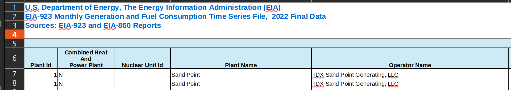
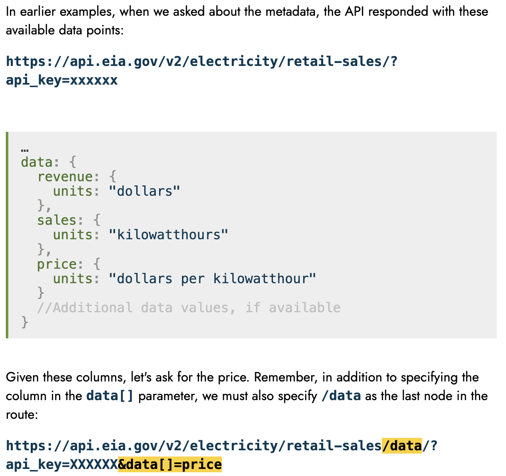
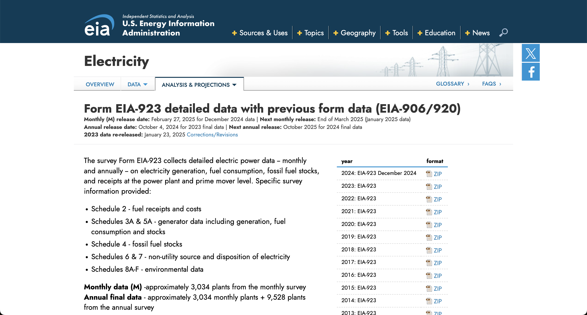
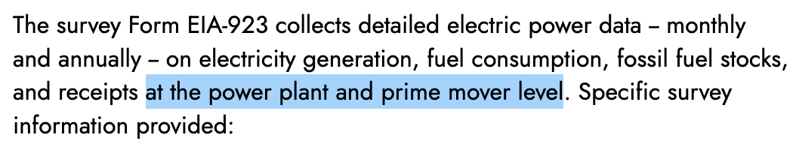

All in One View
Content from Introduction
Last updated on 2025-05-15 | Edit this page
Estimated time: 37 minutes
Overview
Questions
- Working with data sucks. How can I make sure no one else has to suffer this misery?
- What can I do to help my work have lasting impact?
Objectives
- Discuss the benefits of open data principles.
- Identify key challenges to using data in research
Intro exercise: As people trickle in: * online: in the chat, write your name and one thing you’re excited to learn about in the course. * in person: if small enough, ask one by one. If bigger, do the same thing on a sticky note.
Greetings
Welcome to Open Energy Data for All!
Deliver this as if you are in an infomercial, and as if everyone is on board with the character you are playing.
- Have you ever struggled with all the weird little auxiliary bits of writing research software?
- Does it ever seem like those weird little auxiliary bits are, like, all of the work you do, and the actual interesting energy analysis you want to do falls by the wayside?
- Do you ever feel like there must be a better way to do your research?
That’s all normal. There’s a lot to working with data that doesn’t get covered in class, and people are usually left to learn through personal struggle. Drawing on our experiences working with real-world energy data, we’ll focus on a few practical skills that can help close that gap.
Logistics:
- My name is $name and I come from $background. Your other instructors will be $list (ask them for quick intro).
- Most sessions are structured as sets of short explanations or demonstrations, interspersed with exercises. Be prepared to alternate listening-mode with thinking-mode and doing-mode.
- Ask questions by using the “raise hand” indicator or typing into chat.
- Follow along on the website and/or use it to catch up if you need to space out or step out: https://docs.catalyst.coop/open-energy-data-for-all/
Any other questions on what to expect or how to participate?
The energy data landscape
Working with energy data can be hard and frustrating. Data problems can wreck a research project before it starts, or crop up unexpectedly near the finish line. Why is energy data be so hard to work with?
- Energy data can be hard to access: When three federal agencies, state agencies, and Independent System Operators (ISOs) all publish overlapping data about boilers, generators, smokestacks, plants and so on, it can be hard to know where to start. Changes in data structure and format, the large variety of file types, and the sheer size of some datasets all pose challenges. Where data is regularly updated, it can be tricky to keep your workflow up to date, and make sure that your collaborators are working with the same version of the data you’re using.
- Energy data can be messy and unpredictable: Why is this coal plant labelled as retired one year and operating the next? Energy data often requires substantial cleaning before it is ready for analysis, and it’s common that even mid-way through a research process a model or analysis will reveal problems that weren’t obvious at first. Commercial data promises to be analysis-ready, but hides assumptions and transformations in a black box, and imposes restrictions on the reproducibility and openness of your research - if you can afford it!
A new way…
What if instead of each one of us reproducing the same frustrating data wrangling tasks on our own, we found a different way? What would a collaborative, open, and reproducible energy research ecosystem look like?
Collaborative: How can you bring in other people starting early on in the project? It’d be nice if your other team members could review your work, provide feedback, and contribute to parts of the analysis. Then if you have to disappear for a while, other people can carry the project forward.
Open and transparent: What are the inputs, what are the outputs, and how did you get from A to B? When you’re talking to a potential collaborator, a new teammate, or just getting back into the project after a break, being able to see all the steps and assumptions you’ve made along the way can save you a lot of pain. Whether to meet publishing requirements or to contribute to open-source science, you want to be able to share your code and data without hesitation.
Reproducible: How can researchers in other labs can build on the work that you’re about to do, and confirm your results? Maybe you end up getting a new job, leaving someone else in the lab to keep the project going. In your new role, you might find that you yourself want to build on all your old work.
What we will cover
How do we get there? Often, we assume that the skills needed to actually enact these principles are learned naturally through research experience, but this is not always effective in practice. Gaps in these areas can create roadblocks to conducting effective, reproducible and open research, even for experienced researchers.
Modify for whatever subset is being presented.
This course is focused on practical solutions to roadblocks you may encounter in dealing with data, code, and collaboration. We will be following the arc of an open data analysis project in Python, structuring the course into three sections:
Roadblocks to data acquisition:
- My data is in a format I’ve never worked before
- The data I want to work with is published through an Application Programming Interface (API), and I don’t know how to download it
Roadblocks to data cleaning & processing:
- There’s something unexpected about my input data, but I’m not sure what
- The code runs on some of my data, but errors on other input data
- When I re-run my code I get different results, and I’m not sure why
- I have no idea which part of my code is causing a particular problem
- My data changes format or content over time
- My data is too big to work with on a desktop computer
Roadblocks to collaboration:
- I’m not sure how to make it simple for collaborators to run and contribute to my code
- I need to publish my code and/or data for a paper I’m submitting to, but I’m not sure how best to do so
- A colleague wants to build on my existing code, but I’m not sure how to clearly document what I’ve done to make it possible for them to adapt it
- I wrote this code myself six months ago, and I do not recognize it, nor can I remember what I was trying to do
The next episode will discuss reading data in unexpected file formats.
- Open data principles such as reproducibility, transparency, and collaboration make it easier to share, interpret, and build upon research projects.
- Enacting these values doesn’t ‘just happen’ - it requires specific skills and strategies.
Don’t cover this, unless you have a lot of extra time or this is high priority for your students. Instead, direct students to the course website for tips on locating and identifying appropriate datasets for open research projects.
Strategies for finding the ‘right’ data are highly dependent on your specific research field, so we don’t delve into this in the course. However, below you’ll find some resources and aspects of data that are important to consider as you progress
Additional resources: strategies for finding appropriate research data
In conducting open research, it is best to start right at the beginning, with how we choose our datasets. This is not something we’ll cover in detail anywhere else, but we can give some rough guidelines here. Consider the following attributes of a potential data source:
- Relevancy: Does the data contain the variables you need to answer your question? Does the spatial and temporal scale of the data match your research needs? For example, data at the utility level probably won’t be sufficient to answer questions about boiler-level operations.
- Licensing: People often assume that any content they can download from the internet is freely available for use, but this is not true. By default, all creative works are protected by copyright, and if you try to republish something copyrighted, you can run into trouble. If a specific license is set for a dataset, sometimes that might make it free to use, and other times it might set some additional restrictions. Verify that a dataset’s license meets your needs as soon as possible in the research process.
- Documentation: Is the data published with descriptions of any processing done or notable caveats, explanations of variable definitions, and contact information for any further questions?
- Level and type of processing: The more processed a dataset is, the more you’re depending on others’ judgement. If you trust those people, and they make it clear what they’ve done and why, and the result is a dataset that’s much easier to use, this can be a great trade-off. Pre-processed datasets may combine multiple datasets together, use extensive validation techniques, or handle missing and outlying values - depending on your research needs, these can save valuable time and effort or enable you to ask questions that would otherwise be out of scope for a research project.
- Format: Data contained in poorly scanned PDFs will require much more extensive processing to use than data contained in spreadsheets or computer-optimized data formats such as Parquet. If you require multiple years of data for your research, look out for changes in data formats over time.
We also have several recommendations to give you a start finding appropriate data for your own research project, depending on your area of interest:
- For national-scale research, federal agencies such as the EIA, EPA and FERC all publish free and regularly-updated data.
- For local/state-level research: some states maintain their own data portals (e.g., the Alaska Energy Data Gateway), and some ISOs publish regularly-updated operational data (e.g., CAISO’s hourly data).
- For analysis-ready data: projects such as the Public Utility Data Liberation (PUDL) project, PowerGenome, Gridstatus, and others publish pre-processed data that addresses many of the common foundational challenges that make federal energy data hard to work with.
Content from Handling diverse filetypes in Pandas
Last updated on 2025-06-12 | Edit this page
Estimated time: 55 minutes
In preparation for this lesson:
- In Jupyter Notebooks, open the 2-diverse-filetypes.ipynb notebook
- In another Jupyter Notebooks tab, open the directory view to make it possible to visualize the xml file
- Open the
data/eia923_2022.xlsxfile on your computer’s spreadsheet software (e.g., Excel) - Open the lesson folder in your local file browser, to make it easy to open files in a text editor throughout the lesson.
Overview
Questions
- How can I read in different tabular file formats to a familiar data type in Python?
- What are some common errors that occur when importing data, and how can I troubleshoot them?
Objectives
- Import tabular data from Excel, JSON, XML and Parquet formats to
pandas dataframes using the
pandaslibrary - Use
helpand function documentation to select and set parameters in function calls.
Untangling a data pile
To illustrate the centrality of these problems, let’s imagine the following scenario:
You’re poking around your research lab’s collaborative drive when you find a folder containing data, code and some notes from a former postdoctoral researcher. They were investigating patterns in the emissions intensity of electricity production in Puerto Rico as exploratory work for a potential research project, but wound up pursuing another idea instead.
As you prepare for your qualifying exams, you’re interested in
picking up on their work and developing it further. You find the
data folder that the postdoc was using to store data inputs
to his model. It’s a bit of a mess!
Every file in the folder has the same name (“eia923_2022”) but a different file extension. To make sense of this undocumented pile of files, we’ll need to read in each file and compare them.
EIA 923 data
The Energy Information Administration (EIA)’s Form 923 is known as the Power Plant Operations Report. The data include electric power generation, energy source consumption, end of reporting period fossil fuel stocks, as well as the quality and cost of fossil fuel receipts at the power plant and prime mover level (with a subset of +10MW steam-electric plants reporting at the boiler and generator level). Information is available for non-utility plants starting in 1970 and utility plants beginning in 1999. The Form EIA-923 has evolved over the years, beginning as an environmental add-on in 2007 and ultimately eclipsing the information previously recorded in EIA-906, EIA-920, FERC 423, and EIA-423 by 2008.
Given your interest in generation and fuel consumption data for your research, the EIA Form 923 data is a great starting point for data exploration.
Get ready
Open up the notebook for this lesson by running
from the open-energy-data-for-all directory. Then in the
Jupyter browser, open
notebooks/2-diverse-filetypes.ipynb.
Remind people of the setup instructions: https://docs.catalyst.coop/open-energy-data-for-all/#setup Ask for a green sticky or check mark when everyone has completed this step. If after a few minutes people are still having trouble, ask them to message one of the helpers for support. Give them the option to debug in a seperate room if needed, or follow along without coding.
Reading Excel files with Pandas
One of the most popular libraries used to work with tabular data in Python is called the Python Data Analysis Library (or simply, Pandas). Pandas has functions to handle reading in a diversity of file types, from CSVs and Excel spreadsheets to more complex data formats such as XML and Parquet. Each read function offers a variety of parameters designed to handle common complexities specific to the file type on import. For a refresher on Pandas, Pandas DataFrames and reading in files, see the Starting with Data lesson.
We recommend skipping the below call-out unless people run into filepath issues.
Identifying file paths
In order to read data into Pandas or any Python function, we’ll need to identify the path to that file. The path tells the code where that file lives. There are two ways to specify the path to any file on your computer:
- Absolute path: An absolute path specifies a location from the root of the filesystem.
- Relative path: A relative path specifies a location starting from the current location. The relative path is just a subset of the absolute path.
For example, to get to the eia923_2022.json file in the
data folder from a notebook in the
open-energy-data-for-all folder, we can either specify:
-
Absolute path:
/home/user/Desktop/path/to/open-energy-data-for-all/folder/data/eia923_2022.json -
Relative path:
data/eia923_2022.json
Handling spreadsheet formatting on read-in
Of all the files in the data folder, you decide to start
with the Excel spreadsheet. To read in an Excel spreadsheet using
pandas, you will use the read_excel()
function:
That took a while! Luckily,read_excel() offers built-in
functionality to handle various Excel formatting challenges. Let’s see
if there’s a way to quickly explore a smaller subset of the data. While
we can always look up documentation online, we can also access a
function’s documentation right in Python. To identify which parameter
might be able to help us, we can use the help() function to
pull up the function documentation:
For each parameter, the documentation provides the name of the parameter, the format for the parameter input (e.g., list, string, int), the default value if no value is provided, and an explanation of what the parameter does.
We can see that the nrows parameter provides the
following documentation:
OUTPUT
nrows : int, default None
Number of rows to parse.So, if we only want to parse the first 100 rows of the data, we can call:
That’s better. But unfortunately, something doesn’t look quite right! When opening the file in a spreadsheet software, you see that the first few rows look like this:
Go ahead and open the eia923_2022.xlsx file in your
local spreadsheet software (e.g., Excel, OpenOffice).

To read the spreadsheet in correctly, we want to ignore these first five rows.
Challenge 1: handling Excel formatting on read-in
Looking at the documentation for pd.read_excel(),
identify the parameter needed to ignore the first few rows of the
spreadsheet. Then, using pd.read_excel(), read in the
eia923_2022.xlsx file using this parameter to skip any rows
that don’t contain the column headers. Store the result in a variable
called eia923_excel_df.
Each row contains monthly generation data for each plant’s prime mover. While a subset of plants fill out Form 923 at the boiler and generator, a large proportion of plants only report at this more aggregated level. For more on the nuances of the Form 923 data, see PUDL’s data source page for EIA-923.
Reading in JSON files
JavaScript Object Notation (JSON) is a lightweight file format based
on name-value pairs, similar to Python dictionaries. JSON is often used
to send data to and from web applications, and is one of the most common
formats available when you’re accessing data from an Application
Programming Interface (API). JSON data can be found saved as either
.json or .txt files.
Nested content in JSON files
Pandas read_*() methods assume tabular data. When a JSON
file represents a table and nothing else, we can use
pd.read_json() to read it in directly. Most often, we know
a JSON file contains a table when we see a list of dictionaries, or a
dictionary of lists.
However, JSON is a flexible format, and JSON files can be organized all kinds of ways. Unlike Excel or CSV spreadsheets, many JSON files don’t just contain a table. Instead, most JSONs contain data in a nested format.
Nested JSON contains multiple levels of data:
OUTPUT
{
"response": {
"data": [
{
"period": "2022-12",
"plantCode": "6761"
},
{
"period": "2022-12",
"plantCode": "54152"
}
]
}
}To successfully extract tabular data from nested JSON, we need to
identify which part of the structure contains the tabular data we’re
looking for. Here, the response contains another name-value
pair called data, and data contains a list
with two records, each of which has two name-value pairs
(period and plantCode).
The data contained in this JSON file can be represented
as a table! In this case, each dictionary corresponds to one row of the
data, and each name (e.g., “period”) corresponds to a column name. This
is the “list of dictionaries” approach to expressing a table in JSON
format that we mentioned above.
JSONs can include many levels of nesting, including different levels of nesting for similar records or other formatting that doesn’t obey the principles of tabular structure (where each row represents a single record, and each column represents a single variable). We focus on extracting tabular data from these nested JSONs in this lesson, but some JSON files may not contain tabular data at all.
Reading in JSON files using json.load()
To better visualize our JSON file, let’s read it into Python without
changing its format. To do this, we use the json package,
and the load method.
While Pandas handles opening a file in the read_*()
methods, json.load() does not - so, we first need to read
the file into Python. To do so, we use the open()
function.
We recommend skipping the below call-out unless students ask more about what’s actually going on or you’re ahead on schedule - it’s an aside that we don’t necessarily need to get into.
When we open() a file in Python, we should always close
it after we’ve extracted the data we need. Closing a file frees up
system resources and ensures that we aren’t accidentally modifying our
original file.
To automatically handle file opening and closing, we use a
context manager. Using the word with, we put all
the code we want to run on the opened file into an indented block.
PYTHON
import json
with open('data/eia923_2022.json') as file:
eia923_json = json.load(file)
eia923_jsonThe first part of the result looks like this:
OUTPUT
{'response': {'warnings': [{'warning': 'incomplete return',
'description': 'The API can only return 5000 rows in JSON format. Please consider constraining your request with facet, start, or end, or using offset to paginate results.'},
{'warning': 'another warning', 'description': 'Hey! Watch out!'}],
'total': '6949',
'dateFormat': 'YYYY-MM',
'frequency': 'monthly',
'data': [{'period': '2020-11',
'plantCode': '61034',
'plantName': 'EcoElectrica',
'fuel2002': 'ALL',
'fuelTypeDescription': 'Total',
'state': 'PR',
'stateDescription': None,
'primeMover': 'ALL',
'generation': '299985',
'gross-generation': '314449',
'generation-units': 'megawatthours',
'gross-generation-units': 'megawatthours'},
...By using json.load(), we’ve read our file into a Python
dictionary. Now, we can use .keys() to see a list of all
the keys in the first level of the dictionary - this is a quick and
helpful way to get a sense for what is contained in different parts of
the JSON file, without having to scroll through the entire output.
To see the value of any particular key, we can call it in square brackets by name:
This returns yet another dictionary with a list of keys. To look more
closely at the warnings the file contains, we can add
another square bracket:
OUTPUT
[{'warning': 'incomplete return',
'description': 'The API can only return 5000 rows in JSON format. Please consider constraining your request with facet, start, or end, or using offset to paginate results.'},
{'warning': 'another warning', 'description': 'Hey! Watch out!'}]Now that we’ve found the path to our data table in the JSON file, we
can use pd.DataFrame() to transform it into a Pandas
DataFrame:
The function returns a DataFrame that looks like this:
OUTPUT
| warning | description |
|------------------:|--------------------------------------------------:|
| incomplete return | The API can only return 5000 rows in JSON form... |
| another warning | Hey! Watch out! |The first row of this table is letting us know that when the postdoc queried and saved this data from the API, he only got the first 5,000 rows of data. We’ll tackle this problem in a later episode, but for now let’s investigate the data that we do have saved locally.
First, read in the file using open() and
json.load(). Once you’ve read in the file, you can iterate
through the .keys() of the dictionary to find the path to
the data portion of the file.
Deciphering XML
eXtensible Markup Language (XML) is a plain text file that uses tags to describe the structure and content of the data they contain. For example, the following might be a way to represent a note from Saul R. Panel to Dr. Watts apologizing for leaving the project in an incomplete state:
XML
<note>
<from>Saul R. Panel</from>
<to>Dr. Watts</to>
<heading>Note about project</heading>
<body>Sorry for leaving the project in an incomplete state!</body>
</note>In JSON, the equivalent information could be formatted as:
OUTPUT
{
"note": {
"from": "Saul R. Panel",
"to": "Dr. Watts",
"heading": "Note about project",
"body": "Sorry for leaving the project in an incomplete state!"
}
}Like other markup languages (e.g., HTML), XML wraps around data,
providing information about the structure, format, and relationships
between components. Each tag provides metadata about what the piece of
data it contains represents - for instance <row> will
contain a row of data, while
<plantCode>243</plantCode> will means that the
plant code is 243.
Each tag in XML shares similarities with a key in a JSON file: - both provide metadata about what the corresponding value is (e.g., a note, net generation in watts) - both provide information about nested relationships (e.g., the note contains a heading and a body)
However, unlike JSON, XML tags: - can have additional attributes
(e.g.,
<data type="float" precision=3 variable_name="net-generation-mw">3.142</data>),
providing a way to share more complex metadata about a given data point
and to search for tags matching additional filters (e.g., all data with
a particular variable name).
While XML is harder and slower to read than JSON, it also has more capabilities. You might be likely to see an XML file if the data you’re looking at:
- is old! XML was invented in 1998 and is still widely in use in older data distribution methods.
- has deeply nested hierarchies of relationships, like FERC’s accounting data.
- is large and complex! For instance, JSON can only handle strings, numbers and booleans, while XML can also be used to share images, charts and graphs.
- is distributed through an RSS feed. For instance, FERC publishes filings on a rolling basis using an RSS feed and the XML data format.
Using pd.read_xml()
Like with our other data types, we can use pd.read_xml()
to parse XML files into Pandas DataFrames. pd.read_xml() is
designed to ingest tabular data nested in XML files, not to coerce
highly nested data into a table format. To use this method, we’ll need
to identify where in our XML file the data is structured into a
table-like format and can be easily extracted to a DataFrame. For more
on pd.read_xml(), see the Pandas
documentation.
Let’s try to explore the XML file that the postdoc left behind:
Hm, that doesn’t look quite right. Each tag has been assigned as a column name, and the value inside has been added as a row.
If we open up the XML file in a text editor or browser, we can see that a nested series of tags can help us identify the part of the table we want to read in.
XML
<response>
<warnings>
<row>
<warning>incomplete return</warning>
<description>The API can only return 300 rows in XML format. Please consider constraining your request with facet, start, or end, or using offset to paginate results.</description>
</row>
<row>
<warning>another warning</warning>
<description>Hey! Watch out!</description>
</row>
</warnings>
<total>6949</total>
<dateFormat>YYYY-MM</dateFormat>
<frequency>monthly</frequency>
...For example, the same warnings table we were working with before is
in the
To drill down to the section of the file we are actually interested
in, we can use the xpath parameter, which lets you use tags
to specify where in the XML file to look for a table.
The xpath query we’re looking for is formatted as
follows:
- // are used at the beginning to note that we want to select all items with the tags specified
- Then, like specifying which directory we want to access in a terminal, slashes are used to specify the path to the desired tag.
So to get all the <row>s of the
<warnings> table, we call:
Challenge 3: Reading in XML data
Read in all the rows of the data table in
eia923_2022.xml into a Pandas DataFrame, using
pd.read_xml and the xpath parameter. Store the
result in a variable called eia923_xml_df.
The data is found following the following tags:
<response><data><row>
The <data> is split into two seperate chunks of
data seperated by <row> tags, which tells us that
everything between these tags corresponds to a single row of data. Then,
we know that the <period>,
<plantCode> and <plantName> tags
are telling us what variable the values correspond to - or in other
words, what the column name is that corresponds to each tag. We use the
xpath parameter to grab all <row>’s of data in the
XML file.
xpath can be used to make more complex queries (e.g.,
only picking <note>’s written after a certain date),
but we won’t cover more advanced usage of xpath in this
tutorial. See this Library
Carpentries tutorial for more about xpath.
pd.read_parquet()
There’s one more file left in the data folder the
postdoc left behind - a Parquet file! You can think of Parquet files as
spreadsheet storage optimized for computers. Like an Excel file, it’s
very difficult for a human to read the plain text of the file, as it is
designed to be read efficiently by software.
Parquet files: - are designed to efficiently process and store large
volumes of data, making them about 50x faster than using
pd.read_csv() on comparable file sizes. - are saved with
data organized into chunks (e.g., one chunk per month), making it
possible to quickly load data from some part of the dataset without
loading everything into memory. - are supported by many existing tools,
including Pandas.
To get into the technical weeds of Parquet files, see the Parquet documentation. For a desktop viewer similar to Excel, we recommend checking out Tad.
We can read a Parquet file to a Pandas DataFrame using
pd.read_parquet(), almost identical to how we would read in
a CSV:
Below is an optional challenge that is likely to get cut for time. It is intended to refresh students’ data exploration skills, and build intuition around comparing datasets. Plus, it’s a nice ice-breaker. This may be appropriate if you’re only teaching the first two episodes, or if you’re particularly interested in developing the data exploration and comparison skills of your cohort.
Challenge 4: Comparing datasets
Pick two datasets we’ve just read in, and compare them. How are they similar, and how are they different? Share your reflections with a peer.
-
df.info()provides a high level summary of the data, including the columns available, their data types, the number of non-null values in each column, and the overall number of rows in the DataFrame. - Inspect a column in a DataFrame
dfby usingdf[column_name]. - To quickly see what values are contained in a column, you can use
df[column_name].unique()to get a list of unique values in the column. - Try using
df.iloc[0]to get the values from the first row of the data. -
df.head(n)returns the first n rows of the data, anddf.tail(n)returns the last n rows.
-
pandashas functionality to read in many data formats (e.g., XML, JSON, Parquet) into Pandas DataFrames in Python. We can take advantage of this to transform many kinds of structured and semi-structured data into similarly formatted data. - The
helpfunction can be used to access function documentation, providing avenues to resolve problems on import of various data types. - When semi-structured data contains tabular data, we can extract the tabular data into a Pandas Dataframe.
Content from Accessing remote data
Last updated on 2025-06-25 | Edit this page
Estimated time: 0 minutes
Overview
Questions
- How can I consistently work with the most up-to-date data available?
- How can I work with data from a web API?
Objectives
- Read remote files into
pandasdataframes - Investigate the inputs to and outputs from an API
Introduction to remote data
Prep checklist:
Often times you will want to read data that’s not already on your computer. Whether that’s data that’s stored in a cloud bucket like Amazon S3, data that’s behind a Web API, or just data that’s on the EIA website, we can use a common suite of tools to access this remote data. We’ll show you how.
Reading remote files
Using requests
The requests
library is the general way of working with remote data within
Python. It lets us download files from URLs, and also will be a
fundamental piece of how we work with Web APIs. Let’s import it, and set
up a URL to work with a JSON file. This file includes a bunch of data
from EIA 923 in JSON format.
PYTHON
import requests
json_example_url =
"https://raw.githubusercontent.com/catalyst-cooperative/open-energy-data-for-all/refs/heads/main/data/eia923_2022.json"To read a URL we use the requests.get()
method, which returns a requests.Response
object. Let’s try using it!
The Response object has many useful methods and
properties - see help(response). We’ll focus on three: *
response.status_code, which shows you a high level status
of what happened * response.text, which shows you the full
response * response.json(), which parses the response text
into a Python list or dictionary, assuming the response is indeed in
JSON.
First, let’s check out response.status_code. This shows
the HTTP
status code - it’s a three digit number that tells you how the
request went. For example, if you make a request for something that
doesn’t exist, you’ll get a 404 status code.
In general, status codes that start with 2 mean
everything went fine; 4xx means you messed up somehow;
5xx means the computer that’s responding to your request
ran into some sort of error. Or, 4xx is your fault,
5xx is their fault.
OUTPUT
200Great, the request wasn’t a total failure! Now let’s check to see what the content looks like:
OUTPUT
'{"response":{"warnings":[{"warning":"incomplete return","description":"The API can only return 5000 '...Looks like JSON to me! We could parse that text ourselves, but we
might as well just use the built-in functionality of
response.json().
This seems to be a list of records, with “period”, “plantCode”, “plantName”, etc. as columns.
OUTPUT
[{'period': '2020-11',
'plantCode': '61034',
'plantName': 'EcoElectrica',
'fuel2002': 'ALL',
'fuelTypeDescription': 'Total',
'state': 'PR',
'stateDescription': None,
'primeMover': 'ALL',
'generation': '299985',
'gross-generation': '314449',
'generation-units': 'megawatthours',
'gross-generation-units': 'megawatthours'},
{'period': '2020-11',
'plantCode': '61034',
'plantName': 'EcoElectrica',
'fuel2002': 'NG',
'fuelTypeDescription': 'Natural Gas',
'state': 'PR',
'stateDescription': None,
'primeMover': 'ALL',
'generation': '299985',
'gross-generation': '314449',
'generation-units': 'megawatthours',
'gross-generation-units': 'megawatthours'},-
requestsis useful when you need to access remote data -
response.status_codetells you if the request succeeded or why it failed. -
response.textgives you the raw response, if you need to check that the data is formatted how you expect -
response.json()will parse the response as JSON, which is handy
What are some advantages and disadvantages you can imagine for using remote data vs. saving the data to your hard drive (aka local data)?
Some non-exhaustive ideas:
Remote data pros:
- if someone else updates the data, you always have the most recent version
- you don’t need to manage multiple versions of the same data on your hard drive
- if you send your code to someone else, you don’t also have to package the data with it
Local data pros:
- you can keep track of different versions of the same data, even if the publisher doesn’t
- you only need to download the data once, and then you can read from your disk in the future, which is faster
- if someone else updates the data, your data doesn’t change until you actively download a new version
- you can access this without internet!
Intro to web APIs
Web APIs - lots of data is locked up behind them, and they can save you a bunch of work if you know how to use them. Unfortunately, they can be intimidating to work with and the topic is often shrouded in mystery.
Fortunately, you already have the basic skills you need to handle APIs:
- documentation reading
- using
requeststo interact with URLs
This is because every web API is just a fancy bundle of URLs. Here’s an example.
APIs as fancy URLs
Suppose someone asks you, “how much natural gas was consumed for electricity generation, totalled across all sectors, in Puerto Rico, for each year between 2020 and 2023?”
You could go find the EIA 923 spreadsheets for 2020-2023, download the individual files, do a bunch of filtering and reshaping of the data, and get an answer.
But, in this case, the EIA has another way - their web API. Web APIs are collections of fancy URLs that allow them to be much more flexible than merely downloading individual files. They can save you a lot of work, if you become good at using them.
For example, to answer that question, you can request this URL:
PYTHON
response = requests.get("https://api.eia.gov/v2/electricity/electric-power-operational-data/data?data[]=consumption-for-eg&facets[fueltypeid][]=NG&facets[sectorid][]=99&facets[location][]=PR&frequency=annual&start=2020&end=2023&api_key=3zjKYxV86AqtJWSRoAECir1wQFscVu6lxXnRVKG8")
response = requests.get(example_api_url)
response.json()Which gives you:
OUTPUT
{'response': {'total': '4',
'dateFormat': 'YYYY',
'frequency': 'annual',
'data': [{'period': '2020',
'location': 'PR',
'stateDescription': 'Puerto Rico',
'sectorid': '99',
'sectorDescription': 'All Sectors',
'fueltypeid': 'NG',
'fuelTypeDescription': 'natural gas',
'consumption-for-eg': '47834.384',
'consumption-for-eg-units': 'thousand Mcf'},
{'period': '2021',
'location': 'PR',
'stateDescription': 'Puerto Rico',
'sectorid': '99',
'sectorDescription': 'All Sectors',
'fueltypeid': 'NG',
'fuelTypeDescription': 'natural gas',
'consumption-for-eg': '70999.964',
'consumption-for-eg-units': 'thousand Mcf'},
{'period': '2022',
'location': 'PR',
'stateDescription': 'Puerto Rico',
'sectorid': '99',
'sectorDescription': 'All Sectors',
'fueltypeid': 'NG',
'fuelTypeDescription': 'natural gas',
'consumption-for-eg': '50696.82',
'consumption-for-eg-units': 'thousand Mcf'},
{'period': '2023',
'location': 'PR',
'stateDescription': 'Puerto Rico',
'sectorid': '99',
'sectorDescription': 'All Sectors',
'fueltypeid': 'NG',
'fuelTypeDescription': 'natural gas',
'consumption-for-eg': '66022.717',
'consumption-for-eg-units': 'thousand Mcf'}],
'description': 'Monthly and annual electric power operations by state, sector, and energy source.\n Source: Form EIA-923'},
'request': {'command': '/v2/electricity/electric-power-operational-data/data/',
'params': {'data': ['consumption-for-eg'],
'facets': {'fueltypeid': ['NG'], 'sectorid': ['99'], 'location': ['PR']},
'frequency': 'annual',
'start': '2020',
'end': '2023',
'api_key': '3zjKYxV86AqtJWSRoAECir1wQFscVu6lxXnRVKG8'}},
'apiVersion': '2.1.8',
'ExcelAddInVersion': '2.1.0'}The structure of an API call
While that URL can seem impossibly complicated at first, we can break it down into a few parts:
PYTHON
example_api_url = (
"https://api.eia.gov" # "host": the high-level name of the API you're accessing
"/v2/electricity/electric-power-operational-data/data" # "route": the specific aspect of the API you're accessing
"?" # separator that indicates "everything after this will be a name-value pair"
"data[]=consumption-for-eg" # name: data[], value: consumption-for-eg ("consumption for electricity generation")
"&" # separator between each pair
"facets[fueltypeid][]=NG" # only natural gas data
"&"
"facets[sectorid][]=99" # total across all sectors
"&"
"facets[location][]=PR" # in Puerto Rico
"&"
"frequency=annual" # per year
"&"
"start=2020" # starting in 2020
"&"
"end=2023" # ending in 2023
"&"
"api_key=3zjKYxV86AqtJWSRoAECir1wQFscVu6lxXnRVKG8" # a password to prove you have access to the API
)The API key we’re using in this lesson is a public one that EIA provides, but it would be polite to request your own API key by clicking the register button on the EIA open data portal if you plan on using the API a lot.
Many other APIs will not have a public key, so you’ll have to register in one way or another to get one.
Every web API behaves differently, but you only need to be able to do two things to figure any API out:
- read their documentation
- make requests to the API & interpret responses
You can read, and you can use requests to make requests.
We’ll walk through building a similarly complicated query as we just
saw, by applying those two skills.
- web APIs can be thought of as bundles of fancy URLs
- each web API is different, but if you can read the documentation and make requests to URLs, you can figure them out
Case study: EIA API
Let’s take a deeper dive into the EIA API! You can find the API documentation here. We’ll be flipping back and forth between reading the documentation (to get ideas for what to try) and making actual API requests (to understand the actual behavior of the API).
Unfortunately, the EIA API documentation is confusingly formatted and particularly hard to read. So we will just include screenshots of the relevant parts.
Let’s focus on a slightly different question than we had before - now that we know the aggregated information, we want to drill down.
“What was the net electricity generation from natural gas, plant-by-plant, in Puerto Rico from 2020-2023?”
Trying out an API request
Our first goal is to figure out how to start interacting with the API, and how to map any examples in the documentation to real Python code.
When scrolling through the documentation, we’ll notice a bunch of
example URLs. Let’s pick a fairly simple one to get started,
https://api.eia.gov/v2/electricity&api_key=xxxxxx:
We’ll need the API key in a lot of places, so we store that in a variable, and then put it into the URL using an “f-string.”
PYTHON
api_key = "3zjKYxV86AqtJWSRoAECir1wQFscVu6lxXnRVKG8"
electricity_response = requests.get(f"https://api.eia.gov/v2/electricity?api_key={api_key}")
electricity_response.json()OUTPUT
{'response': {'id': 'electricity',
'name': 'Electricity',
'description': 'EIA electricity survey data',
'routes': [{'id': 'retail-sales',
'name': 'Electricity Sales to Ultimate Customers',
'description': 'Electricity sales to ultimate customer by state and sector (number of customers, average price, revenue, and megawatthours of sales). \n Sources: Forms EIA-826, EIA-861, EIA-861M'},
{'id': 'electric-power-operational-data',
'name': 'Electric Power Operations (Annual and Monthly)',
'description': 'Monthly and annual electric power operations by state, sector, and energy source.\n Source: Form EIA-923'},
{'id': 'rto',
'name': 'Electric Power Operations (Daily and Hourly)',
'description': 'Hourly and daily electric power operations by balancing authority. \n Source: Form EIA-930'},
{'id': 'state-electricity-profiles',
'name': 'State Specific Data',
'description': 'State Specific Data'},
{'id': 'operating-generator-capacity',
'name': 'Inventory of Operable Generators',
'description': 'Inventory of operable generators in the U.S.\n Source: Forms EIA-860, EIA-860M'},
{'id': 'facility-fuel',
'name': 'Electric Power Operations for Individual Power Plants (Annual and Monthly)',
'description': 'Annual and monthly electric power operations for individual power plants, by energy source and prime mover\n Source: Form EIA-923'}]},
'request': {'command': '/v2/electricity/',
'params': {'api_key': '3zjKYxV86AqtJWSRoAECir1wQFscVu6lxXnRVKG8'}},
'apiVersion': '2.1.8',
'ExcelAddInVersion': '2.1.0'}It looks like there’s no actual data here… what’s going on? Let’s take a look at the docs.
Challenge
In this section, the docs say:
Discovering datasets should be much easier in APIv2 because the API now self-documents and organizes itself in a data hierarchy. Parent datasets have child datasets, which may have children of their own, and so on. To investigate what datasets are available, we request a parent node. The API will respond with the child datasets (routes) for the path we’ve requested.
If we’re looking for yearly data about fuel consumption at the plant
level, what route should we request next? Please request it using
requests.get below.
facility-fuel!
PYTHON
facility_fuel = requests.get(f"https://api.eia.gov/v2/electricity/facility-fuel?api_key={api_key}").json()
facility_fuelOUTPUT
{'response': {'id': 'facility-fuel',
'name': 'Electric Power Operations for Individual Power Plants (Annual and Monthly)',
'description': 'Annual and monthly electric power operations for individual power plants, by energy source and prime mover\n Source: Form EIA-923',
'frequency': [{'id': 'monthly',
'description': 'One data point for each month.',
'query': 'M',
'format': 'YYYY-MM'},
{'id': 'quarterly',
'description': 'One data point every 3 months.',
'query': 'Q',
'format': 'YYYY-"Q"Q'},
{'id': 'annual',
'description': 'One data point for each calendar year.',
'query': 'A',
'format': 'YYYY'}],
'facets': [{'id': 'plantCode', 'description': 'Plant ID and Name'},
{'id': 'fuel2002', 'description': 'Energy Source'},
{'id': 'state', 'description': 'State'},
{'id': 'primeMover', 'description': 'Prime Mover'}],
'data': {'generation': {'alias': 'Net Generation', 'units': 'megawatthours'},
'gross-generation': {'alias': 'Gross Generation', 'units': 'megawatthours'},
'generation': {'alias': 'Consumption of Fuels for Electricity Generation and Useful Thermal Output (Physical Units)'},
'generation-btu': {'alias': 'Consumption of Fuels for Electricity Generation and Useful Thermal Output (BTUs)',
'units': 'MMBtu'},
'consumption-for-eg': {'alias': 'Consumption of Fuels for Electricity Generation (Physical Units)'},
'consumption-for-eg-btu': {'alias': 'Consumption of Fuels for Electricity Generation (BTUs)',
'units': 'MMBtu'},
'average-heat-content': {'alias': 'Average Heat Content of Consumed Fuels'}},
'startPeriod': '2001-01',
'endPeriod': '2024-11',
'defaultDateFormat': 'YYYY-MM',
'defaultFrequency': 'monthly'},
'request': {'command': '/v2/electricity/facility-fuel/',
'params': {'api_key': '3zjKYxV86AqtJWSRoAECir1wQFscVu6lxXnRVKG8'}},
'apiVersion': '2.1.8',
'ExcelAddInVersion': '2.1.0'}Getting actual data
Requesting electricity/facility-fuel still doesn’t give
us any data, but it seems like we’re getting closer - there’s a
data field in the response, and also some
frequency and facets information that looks
relevant.
What next? Through some more documentation
reading, we can find some explanation of this data
field and a helpful example URL:

In earlier examples, when we asked about the metadata, the API responded with these available data points [under the ‘data’ key]:
[…]
Remember, in addition to specifying the column in the data[] parameter, we must also specify /data as the last node in the route:
https://api.eia.gov/v2/electricity/retail-sales/data/?api_key=XXXXXX&data[]=price
Given the above example, and the output for the
facility-fuels metadata, we can get the net generation
data:
First, let’s see what data is available using that ‘data’ key they mentioned:
PYTHON
base_url = "https://api.eia.gov/v2/electricity"
facility_fuels_metadata = requests.get(f"{base_url}/facility-fuel?api_key={api_key}")
facility_fuels_metadata.json()["response"]["data"]OUTPUT
{'generation': {'alias': 'Net Generation', 'units': 'megawatthours'},
'gross-generation': {'alias': 'Gross Generation', 'units': 'megawatthours'},
'total-consumption': {'alias': 'Consumption of Fuels for Electricity Generation and Useful Thermal Output (Physical Units)'},
'total-consumption-btu': {'alias': 'Consumption of Fuels for Electricity Generation and Useful Thermal Output (BTUs)',
'units': 'MMBtu'},
'consumption-for-eg': {'alias': 'Consumption of Fuels for Electricity Generation (Physical Units)'},
'consumption-for-eg-btu': {'alias': 'Consumption of Fuels for Electricity Generation (BTUs)',
'units': 'MMBtu'},
'average-heat-content': {'alias': 'Average Heat Content of Consumed Fuels'}}"generation" looks like what we want - let’s try using
it!
Filtering the data
That data we got above is generation data, but there are still some problems:
- it includes all fuel types
- it includes all states
- it includes all years
- it’s monthly, not yearly
Let’s tackle these one at a time, starting with the fuel types.
We can read the documentation a bit more, and find this section talking about:
Facets enable us to filter the data of concern to us, shrinking the size of the returns to a more manageable size.
For example, our retail sales of electricity has the location and sector facets. If we query the route (without specifying /data), the API will tell us the facets that are relevant to that route.
So we learn two things:
- “facets” is a word associated with filtering your data.
- let’s check out that metadata to figure out what facets are available!
OUTPUT
...
'facets': [{'id': 'plantCode', 'description': 'Plant ID and Name'},
{'id': 'fuel2002', 'description': 'Energy Source'},
{'id': 'state', 'description': 'State'},
{'id': 'primeMover', 'description': 'Prime Mover'}],
...Looks like fuel2002 is the facet we want to use… but how
do we use it? ? A quick search in the docs for &facet
will give us this example:
http://api.eia.gov/v2/electricity/retail-sales/data/?api_key=xxxxxx&facets[stateid][]=CO&facets[sectorid][]=RES&frequency=monthly
Let’s try copying this pattern.
PYTHON
gas_only = requests.get(
f"{base_url}/facility-fuel/data?data[]=generation&facets[fuel2002][]=gas&api_key={api_key}"
)As we accumulate more and more parameters, this starts to get pretty
unwieldy to read - fortunately, requests allows us to pass
in the parameters as a dictionary alongside the request:
PYTHON
gas_only = requests.get(
f"{base_url}/facility-fuel/data",
params={
"data[]": "generation",
"facets[fuel2002][]": "gas",
"api_key": api_key
},
)
gas_only.json()It returns this un-helpful empty result, though… maybe “gas” isn’t the right value to pass in. We’ve reached the limits of guessing again, time to look at the documentation!
OUTPUT
{'response': {'total': '0',
'dateFormat': 'YYYY-MM',
'frequency': 'monthly',
'data': [],
'description': 'Annual and monthly electric power operations for individual power plants, by energy source and prime mover\n Source: Form EIA-923'},
'request': {'command': '/v2/electricity/facility-fuel/data/',
'params': {'data': ['generation'],
'facets': {'fuel2002': ['gas']},
'api_key': '3zjKYxV86AqtJWSRoAECir1wQFscVu6lxXnRVKG8'}},
'apiVersion': '2.1.8',
'ExcelAddInVersion': '2.1.0'}If we look in the docs, there’s a section where we can see an example for figuring out the possible values, which we can adapt for our needs:
To determine what the appropriate values for those are, we query on that facet itself Let’s try asking for all available sectors by specifying the
sectoridfacet:
https://api.eia.gov/v2/electricity/retail-sales/facet/sectorid/?api_key=xxxxxx
PYTHON
fueltypes = requests.get(f"{base_url}/facility-fuel/facet/fuel2002?api_key={api_key}").json()
fueltypesOUTPUT
{'response': {'totalFacets': 47,
'facets': [{'id': 'NG', 'name': 'Natural Gas'},
{'id': 'LIG', 'name': 'Coal'},
{'id': 'WDL', 'name': 'Wood Waste Solids'},
{'id': 'MWH', 'name': 'Other'},
...So we can see that the NG value corresponds to “Natural
Gas”. Let’s try again with that:
PYTHON
gas_only = requests.get(
f"{base_url}/facility-fuel/data",
params={
"data[]": "generation",
"facets[fuel2002][]": "NG",
"api_key": api_key
},
)
gas_only.json()It does seem to filter the outputs to only natural gas data!
Challenge
So we’ve handled the fuel type - let’s split into breakout groups to handle the other issues with the data:
- we would like to filter this to Colorado data only
- we would like to filter this to data for 2020, 2021, 2022, and 2023
- we would like the data to be reported yearly, not monthly
For each group, pick one of those bullets and follow these steps:
- Look at the metadata. See what parameters might help you get the right data back.
- Figure out what values you want to pass in.
- Try doing that and see if it fixed the problem.
Once we’re all done we can come back and make the full API request together.
Now you’ve worked through the documentation, played with an API, and built up a complicated API query from scratch! And you’ve answered your earlier question of “what was the net generation from natural gas, plant-by-plant, in Puerto Rico from 2020-2023?”
That was a lot of work, but now you’ve gained some experience in the general skill of API learning which should serve you well.
-
requestsis a swiss-army knife for accessing remote data - web APIs are just collections of fancy URLs, which you can interact
with via
requests - to learn an API, you need to read the documentation and experiment with the API to see how it responds
Content from Scraping Data
Last updated on 2025-06-25 | Edit this page
Estimated time: 0 minutes
Overview
Questions
- How do I avoid the tedium/error-prone-ness of clicking lots of links or making lots of API requests by hand?
Objectives
- Use pagination to get all available data
- Automatically download files from a long listing of links on a page
Introduction
Now we’ve learned about how to download data from websites and from APIs. But some questions linger…
often there are webpages with lots of links to data you want… copy-pasting each link into our code is a pain, and hardly better than just clicking each link to download the data. Is there a better way?
you might also remember seeing that ‘warning’ from the EIA API about only returning 5000 rows at a time… how can we get more?
The thread connecting these two questions/problems is that sometimes your data lives behind many URLs, not just one. So you have to go get a bunch of separate data and glue it all together.
Web scraping
Let’s start by downloading files from a webpage that has many links - the good old EIA website.
For all the benefits of the API, some of the EIA 923 data is only available through the downloadable spreadsheets - and the spreadsheets are only available by clicking through the list of links on the EIA 923 page:

There’s only a couple dozen, so we could probably get away with just downloading the files by clicking the links. But, you can imagine how it could quickly get out of hand with multiple pages or many more links. We’ll keep it simple for now and just stick with the EIA 923 page as an example.
Example: EIA 923/906
First, let’s import the libraries we’ll need to use. Of course we’ll
use our workhorse requests. We’ll also need a library
called “Beautiful Soup” that helps us work with website data in
particular. It’s imported as bs4.
PYTHON
import bs4
import requests
# while we're doing the imports, might as well store the URL in a variable.
eia_923_url = "https://www.eia.gov/electricity/data/eia923/"To get the links, first we need to get the webpage itself - that’s where the links are. Let’s see what the webpage looks like!
OUTPUT
'<!doctype html>\r\n<html>\r\n\r\n<head>\r\n\t<title>\r\n\t\tForm EIA-923 detailed data with previous form data (EIA-906/920) -\r\n\t\tU.S. Energy Information Administration (EIA)\t</title>\r\n\t<meta property="og:title" content="Form EIA-923 detailed data with previous form data (EIA-906/920) - U.S. Energy Information Administration (EIA)">\r\n\t<meta property="og:url" content="https://www.eia.gov/electricity/data/eia923/index.php">\r\n\t<meta name="url" content="https://www.eia.gov/electricity/data/eia923/index.php">\r\n\t<meta name="description" content="Clean Air Act Data Browser" />\r\n\t...OK, so that looks like some XML, which we saw a couple episodes ago - notice the many angle brackets containing words that seem to be trying to tell us something. We can use those tags to understand the content of the file, and then filter through it to find what we actually need.
This is actually a special type of XML called HTML, which is
what most webpages are described in (see the doctype html
tag). HTML is a vast and chaotic world, with exceptions to every rule.
Fortunately, bs4 is here to help tame the chaos a bit. The
core of the library is the BeautifulSoup class, which takes
in a website’s HTML and adds some useful functionality to it:
The first thing you’ll notice is that the output looks neater:
OUTPUT
<!DOCTYPE html>
<html>
<head>
<title>
Form EIA-923 detailed data with previous form data (EIA-906/920) -
U.S. Energy Information Administration (EIA) </title>
<meta content="Form EIA-923 detailed data with previous form data (EIA-906/920) - U.S. Energy Information Administration (EIA)" property="og:title"/>We’ll also be able to filter through this complicated set of tags.
To get all the links, we need to get all the a tags -
that’s where links in HTML usually live:
OUTPUT
[<a name="top"></a>,
<a href="http://x.com/eiagov/" target="_blank"><span class="ico-sticker twitter"></span></a>,
<a class="addthis_button_tweet"></a>,
<a href="https://www.facebook.com/eiagov" target="_blank"><span class="ico-sticker facebook"></span></a>,
<a class="addthis_button_facebook_like at300b" fb:like:layout="button_count"></a>,
...
<a class="ico zip" href="xls/f923_2024.zip" title="2024"><span>ZIP</span></a>,
<a class="ico zip" href="archive/xls/f923_2023.zip" title="2023"><span>ZIP</span></a>,
<a class="ico zip" href="archive/xls/f923_2022.zip" title="2022"><span>ZIP</span></a>,
<a class="ico zip" href="archive/xls/f923_2021.zip" title="2021"><span>ZIP</span></a>,
<a class="ico zip" href="archive/xls/f923_2020.zip" title="2020"><span>ZIP</span></a>,
...OK, so we see a big list of tags, some of which appear to be links to
form 923 ZIP files. The URLs for those are included in an
href attribute. Almost every URL you’ll want to use will
live in one of these href attributes.
We can filter based on attributes like this:
This shows us only the a tags with hrefs
defined:
OUTPUT
[<a href="http://x.com/eiagov/" target="_blank"><span class="ico-sticker twitter"></span></a>,
<a href="https://www.facebook.com/eiagov" target="_blank"><span class="ico-sticker facebook"></span></a>,
<a class="eia-accessibility" href="#page-sub-nav">Skip to sub-navigation</a>,
<a class="logo" href="/">
<h1>U.S. Energy Information Administration - EIA - Independent Statistics and Analysis</h1>
</a>,
<a class="nav-primary-item-link menu-toggle" href="javascript:;">And then you can filter those only for the ones that point at actual ZIP files:
PYTHON
eia_923_zip_tags = []
for a in eia_923_a_hrefs:
if a["href"].lower().endswith(".zip"):
eia_923_zip_tags.append(a)
eia_923_zip_tagsOUTPUT
[<a class="ico zip" href="xls/f923_2024.zip" title="2024"><span>ZIP</span></a>,
<a class="ico zip" href="archive/xls/f923_2023.zip" title="2023"><span>ZIP</span></a>,
<a class="ico zip" href="archive/xls/f923_2022.zip" title="2022"><span>ZIP</span></a>,
<a class="ico zip" href="archive/xls/f923_2021.zip" title="2021"><span>ZIP</span></a>,
...
<a class="ico zip" href="archive/xls/f906920_2003.zip" title="2003"><span>ZIP</span></a>,
<a class="ico zip" href="archive/xls/f906920_2002.zip" title="2002"><span>ZIP</span></a>,
<a class="ico zip" href="archive/xls/f906920_2001.zip" title="2001"><span>ZIP</span></a>,
<a class="ico zip" href="archive/xls/f906nonutil2000.zip" title="2000"><span>ZIP</span></a>,
<a class="ico zip" href="archive/xls/f906nonutil1999.zip" title="1999"><span>ZIP</span></a>,
<a class="ico zip" href="archive/xls/f906nonutil1989.zip" title="1989-1998"><span>ZIP</span></a>]We probably want to skip those Form 906 links too.
PYTHON
eia_923_zip_tags = []
for a in eia_923_a_hrefs:
if a["href"].lower().endswith(".zip") and "f923" in a["href"]:
eia_923_zip_tags.append(a)
eia_923_zip_tagsPYTHON
eia_906_url = "https://www.eia.gov/electricity/data/eia923/eia906u.php"
eia_906_response = requests.get(eia_906_url)
eia_906_soup = bs4.BeautifulSoup(eia_906_response.text)
eia_906_a_hrefs = eia_906_soup.find_all("a", href=True)
eia_906_xls_tags = []
for a in eia_906_a_hrefs:
if ".xls" in a["href"].lower():
eia_906_xls_tags.append(a)Downloading the data
OK, now we have our tags, time to use them to download the data! Let’s try it with one tag first:
PYTHON
eia_906_one_link = eia_906_xls_tags[0]
eia_906_one_response = requests.get(eia_906_one_link["href"])Oh no! We get an error:
OUTPUT
MissingSchema: Invalid URL '/electricity/data/eia923/archive/xls/utility/f7592000mu.xls': No scheme supplied. Perhaps you meant https:///electricity/data/eia923/archive/xls/utility/f7592000mu.xls?Looks like the URL in the href is incomplete. It turns
out that this is a relative path - much like the relative paths
you had to deal with when loading data on your computer. The full URL we
want is
https://www.eia.gov/electricity/data/eia923/archive/xls/utility/f7592000mu.xls
- which combines the URL of the page we got the link from
(https://www.eia.gov/electricity/data/eia923/eia906u.php)
with the fragment we got in the href
(/electricity/data/eia923/archive/xls/utility/f7592000mu.xls).
This is a super common thing to have to do, so there’s a useful bit
of the Python standard library for this:
urllib.parse.urljoin:
from urllib.parse import urljoin
eia_906_one_full_url = urljoin(eia_906_url, eia_906_one_link["href"])
eia_906_one_response = requests.get(eia_906_one_full_url)We can also do the string concatenation ourselves with
eia_906_url + "...", but there are a surprising amount of
details to get wrong here so it’s nice to just use the function that
works.
Finally, we can take a look at the actual dataframe using
pandas:
Note that we use .content here instead of
.text - this is because an Excel file is not designed to be
read directly as text.
You can bypass this manual download-then-read process, actually, with
pd.read_excel - it can handle reading directly from a
URL:
Challenge: get the Form 906 file contents
OK, so now we know how to scrape a bunch of URLs from a webpage.
Let’s read the Form 906 files into our program! Since they’re XLS files,
we can read them directly from a URL using
pandas.read_excel.
Try making a list, eia_906_dataframes, that includes all
of the data files from the EIA 906
page - start with the (minimal) scaffold below!
Once we’ve completed the challenge above, we have a list of a bunch
of dataframes. To bring them all into one dataframe, we can use
pd.concat, which “concatenates” several dataframes
together:
If you use DataFrame.info() you can quickly see that
some columns (YEAR, FIPST, UTILNAME) are more populated than others
(MULTIST, GEN01, etc):
And if you start to dig into the data a bit, such as pulling out the
various values of YEAR, you see that you have
plenty of data cleaning to do before this is really usable for
analysis. But at least you have all of the data in one dataframe now!
We’ll go over some more tips for exploratory data analysis in the next
episode.
OUTPUT
YEAR
96 10507
97 10468
1999 10296
2000 9617
74 6429
73 6363
75 6362
76 6307
72 6198
71 6130
70 6100
81 5692
85 5692
80 5678
82 5669
84 5661
83 5650
87 5647
86 5634
77 5627
78 5594
79 5554
98 5470
89 5263
88 5241
95 5119
1998 5118
93 5109
91 5107
94 5102
92 5100
90 5074
99 40
0 14
Name: count, dtype: int64Why might you choose to do all this instead of just manually collecting links?
- If it’s a lot of effort to get to each link
- If the data is frequently updated
- If I have to download all the files multiple times
- If I have to combine everything into one big dataset programmatically anyways
Pagination
Another time you’ll need lots of URLs is when APIs don’t give you everything all at once. Let’s look at an example request to the EIA API we saw last time:
PYTHON
eia_api_base_url = "https://api.eia.gov/v2/electricity"
api_key = "3zjKYxV86AqtJWSRoAECir1wQFscVu6lxXnRVKG8"
first_page = requests.get(
f"{eia_api_base_url}/facility-fuel/data",
params={
"data[]": "generation",
"facets[state][]": "PR",
"sort[0][column]": "period",
"sort[0][direction]": "desc",
"sort[1][column]": "plantCode",
"sort[1][direction]": "desc",
"api_key": api_key
}
).json()["response"]There’s a lot of info in here so let’s just look at the keys to start.
The data lives in the "data" key, so let’s take a quick
look at that:
Seems like it’s sensible data, but 5000 rows is a suspiciously round (and small) number. Is there anything funny going on?
Ooh! There’s a warning - what is it?
The API can only return 5000 rows in JSON format. Please consider constraining your request with facet, start, or end, or using offset to paginate results.So if we want a dataset that’s bigger than 5000 rows, we’ll need to make multiple requests. Instead of scraping many URLs from a page, we’ll be generating the URLs ourselves.
This process of “get N rows, then the next N rows, etc.” is called “pagination” - like going to the next page of Google results.
We’ll go to the docs to look
at this offset parameter:
Offset stipulates the row number the API should begin its return with, out of all the eligible rows our query would otherwise provide.
[…]
https://api.eia.gov/v2/electricity/retail_sales/data?api_key=xxxxxx&data[]=price&facets[sectorid][]=RES&facets[stateid][]=CO&frequency=monthly&sort[0][column]=period&sort[0][direction]=desc&offset=24In the above example, the API will skip over the first 24 eligible rows (offset=24), which translates into 24 months (frequency=monthly).
Let’s try using that. First, let’s pull the common parameters into a variable so it’s a little easier to work with:
PYTHON
common_params = {
"data[]": "generation",
"facets[state][]": "PR",
"sort[0][column]": "period",
"sort[0][direction]": "desc",
"sort[1][column]": "plantCode",
"sort[1][direction]": "desc",
"api_key": api_key
}
next_page = requests.get(
f"{base_url}/facility-fuel/data", params=common_params | {"offset": 5000}
).json()["response"]If we look at that we can see that we do indeed get the next several months of data:
And if we wanted to grab the first 5 pages, we could use a
for loop combined with the range()
function.
range() is super useful - at its simplest, it just
produces, well… a range of numbers.
If you want to start at a specific number, you can do something like:
And if you want to count in different increments, you can do:
:::: challenge: range
If you wanted to set a fresh offset for every page in a
number of rows, how would you do that? Imagine there are 23,456 rows and
each page must be 5000 rows long.
::::
How many rows to get?
Now that we know how to get multiple pages, we need to know when to stop getting more pages.
Broadly, there are two strategies:
- figure out the total number of results ahead of time, and do some math to figure out how many pages to request
- keep getting more pages until you run out of results
Both work, and each has its own downsides:
- the first method only works for APIs that tell you how many results there are.
- the second method can lead to infinite loops if you mess up.
Since the EIA API tells you how many results there are, let’s work with the first option.
Let’s look at the API response again.
That “total” field looks pretty suspicious.
So there are about 8,000 rows in this dataset. That’s the last piece you need to be able to do this challenge!
Challenge: pagination
OK, now let’s put it all together!
Let’s try to get the net generation data in Puerto Rico that is in the EIA API.
Start with the following code and modify it to work:
PYTHON
all_records = []
for offset in range(0, 12_345, 5000):
print(f"Getting page starting at {offset}...")
page = requests.get(
f"{eia_api_base_url}/facility-fuel/data",
params=common_params | {"offset": offset}
).json()["response"]
all_records.append(pd.DataFrame(page["data"]))
df = pd.concat(all_records) # combines all pages into one big dataframeFurther resources
We’ve only just scratched the surface of programmatically getting data from the Internet here. Sometimes, there are obstacles. We can’t teach you how to overcome all of them, but here is a little troubleshooting guide of “something weird? maybe try searching for these keywords.”
- Links not showing up in your
bs4atags?- look at the links using the html inspector in your browser dev tools.
- look at what’s happening when you download files by using the
network tab of your browser dev tools.
- when you click something to download data, or when you load in data for a graph, keep an eye on this. you might find some suspicious looking URLs
- The HTML you see in browser dev tools is different from
what you get from
requests?- sometimes there’s code that your browser runs after the initial
load, which changes the HTML after the fact.
requestswon’t catch that, but tryplaywrightwhich runs that post-load code. keyword isheadless browser automation. - sometimes servers will be mean to you because of who you say you are
(user agent).
- sometimes they’ll give you some sort of error, or a CAPTCHA
- sometimes they will just not give you any response at all
- If you suspect that… try telling them you’re a real human instead of a bot. Look for “spoofing the user agent” to see guides on how to do this.
- sometimes there’s code that your browser runs after the initial
load, which changes the HTML after the fact.
- Running into rate limits for making too many requests?
- Try adding some delays in your scraping code so that it’s not
hammering the server so hard. The
time.sleepmethod here is your friend. - Do double-check the terms & conditions of the website you’re using - if a website is implementing some rate limit, they probably don’t want you using automated tools to download the data in the first place.
- You might need a ‘web scraping proxy’ service, which will let you get around a lot of limits.
- Try adding some delays in your scraping code so that it’s not
hammering the server so hard. The
- Have to download a file to disk instead of turning it into a
DataFrame immediately?
- Use
response.contentto get the literal bytes that the response is made of - this will help with files like ZIP files that don’t have a nice text representation. - Then use the “wb” mode (“write binary”) to write that data to disk:
- Use
- beautiful soup lets you grab links out of a webpage so that you can then download them
- if you need to get more than one request worth of results from an API, they usually provide some “pagination” capabilities so you can make all the requests programmatically.
- web scraping is a wide world - if you get stuck, try searching for some of the keywords above.
Content from Visual Data Exploration
Last updated on 2026-02-05 | Edit this page
Estimated time: 110 minutes
Overview
Questions
- How do I get ready to do research with data that is new to me?
- What should I do when I find something that doesn’t look right?
- How can I get a head start on identifying data problems that might cause headaches later?
Objectives
- Identify a primary key and explain its significance
- Examine data for anomalies using summarization and visualization
- Articulate the difference between refining plots for exploration and refining plots for presentation
- Execute a repeatable strategy for locating the cause and extent of anomalies
Prep:
Start a spreadsheet application but do not open anything in it yet
-
Share whole screen or screen region with the following (overlapping is fine):
- Web browser with slides for the intro
- Terminal window open to the course repo
- File browser open to the course repo
-
Unshared screen or region:
- Course website instructor view or raw episode file
Adapt intro to whether workshop is part of the full series or running as part of the VisEx+Assumptions standalone.
Setup instructions: https://docs.catalyst.coop/open-energy-data-for-all/index.html#setup
GitHub repo: https://github.com/catalyst-cooperative/open-energy-data-for-all/
Course website: https://docs.catalyst.coop/open-energy-data-for-all/visual-data-exploration.html
Now that you have some raw data, how do you get from there to actually doing research with it?
Maybe you already have a research question; how do you get your data into a form that can help you answer it? How do you know your data doesn’t have gremlins hiding in it that will mess up your research?
In this session we will do some initial data explorations and develop strategies for identifying and diagnosing sneaky data problems – including the use of data visualization as part of your exploration toolkit. Plots aren’t just for papers!
What kinds of data problems are common in energy data?
Data problems come in many different forms:
- Problems introduced by the respondent, such as typos and other data entry errors.
- Problems introduced by the data aggregator, such as confusing or inconsistent documentation, or a bad choice of data format that doesn’t preserve relationships within the data.
- “Problems” introduced by external forces, such as natural disasters and policy change.
Data problems can occur in a single column, or in the relationship between columns, or even in the relationship between tables.
How you respond to them will depend on the source of the problem and what kind of impact it will have on the kinds of modeling and analysis you want to do. For example,
- Simple typos can often be fixed, but if the correct values can’t be reconstructed, you may need to exclude the affected rows from your analysis.
- If the data doesn’t seem to match the documentation published with it, you can sometimes track down the instructions respondents were given and use that to work out what’s supposed to be there.
- Irregular data from a natural disaster may be exactly what you’re studying, but might need to be excluded from analyses focused on steady-state behavior.
What is a good general strategy for finding problems in unfamiliar data?
Data problems aren’t always obvious. To uncover them, we will need to go looking for them.
There is a pattern to this:
- Carve off a chunk of data small enough to reason about
- Identify what we expect to see from that data
- Check whether that is actually true or not
- Justify or explain any differences between what we expect and what is actually there
When we first start out, our expectations will be quite general, often based on data type – whether the data is numeric, categorical, or free text. As we become more familiar with the data, our expectations will become more sophisticated. Sometimes the data defies our expectations in ways that reveal new research questions. Keep an open mind, and be sure to leave yourself good notes as you go!
Explore using summarization
Let’s take a look at how these ideas apply to real data. We’ll build up some practice with our problem-hunting strategy by starting with summary statistics. Then once the strategy feels comfortable, we’ll bring in visualization.
Fire up Jupyter notebook:
& open notebooks/5-visual-data-exploration.ipynb
We’ll be looking at form EIA-923, which records electricity generation and fuel consumption for power plants that serve the United States.
You have a raw file for EIA-923 data from Puerto Rico, and a processed file which was prepared by your predecessor. The paths are already in the notebook for you:
PYTHON
raw_file = "../data/raw_eia923__puerto_rico_generation_fuel.parquet"
monthly_file = "../data/pr_gen_fuel_monthly.parquet"We will ask ourselves:
- What kinds of data are there? Can I look at just one kind at a time?
- What do I expect to see from this data?
- What do I actually see?
- Can I justify or explain any differences between what I expect and what I actually see?
Primary keys
Let’s load the processed file and see what’s in there.
EIA-923 records fuel consumption and electricity generation over time. To better reason about this data frame, it is important to identify its primary key: What columns, taken together, uniquely identify each row of data? What does each row represent?
If we were familiar with EIA-923 from other research, we might know that already. If not, we can check the dataset documentation.
The EIA website is a good place to check first for all EIA forms. The page for Form EIA-923 has a summary that hints at the primary key:

The documentation suggests a primary key that includes: the date (“monthly and annually” implies a time series), power plant identifiers, and prime mover. Sometimes documentation is incomplete, so it’s always good to double check.
We can use our problem-hunting strategy to do so. First, we’ll grab just the columns we think define the primary key.
PYTHON
# carve off a chunk: what is the primary key?
# maybe: plant ids, prime mover, and date
primary_key_columns = ["plant_id_eia", "plant_name_eia", "prime_mover_code", "date"]
pr_gen_fuel_monthly[primary_key_columns]Next, identify what we expect. For a primary key to do its job, it needs to be unique from row to row. We expect each set of plant id, name, prime mover, and date values in the data frame to only appear once.
Now we need to check whether our expectation is true in the data.
There are lots of ways we could do that. .value_counts() is
a great function for this situation – it works on single columns, but
also on multiple columns taken together.
PYTHON
# what do we expect: each set of values only occurs once
# check whether that's actually true: use value_counts
pr_gen_fuel_monthly[primary_key_columns].value_counts()This tells us that the combination ID 61147, name Costa Sur Plant, prime mover ST, and date 2017-11-01 occurs twice in the data frame. Not ideal. Let’s see if we can justify that. Is this a case of a few isolated problems, or a systemic problem, or is our guess at the primary key just wrong?
The output also tells us there are 4504 unique values for our candidate primary key. We can see there are at least 5 keys that occur more than once. How common is the duplication? If there are really only 5 duplicates, it could be a few isolated problems. If it’s significantly more than that, we would start looking at our primary key with suspicion.
Let’s filter for just the keys that occur more than once, and see how many there are.
PYTHON
# explain the differences: how many duplicates are there?
pk_sizes = pr_gen_fuel_monthly[primary_key_columns].value_counts()
pk_sizes.loc[pk_sizes>1]554 duplicates out of that 4504… so more than 10 percent. That’s either a massively systemic problem, or there’s one or more columns we need to add to our primary key to distinguish between duplicate rows.
Challenge
Look at one of the duplicate entries and propose another column to add to our primary key.
Use .loc to grab the data for one of the duplicate keys.
Are there any columns, other than the measurement columns, that differ
between the two entries?
If we add energy_source_code to our primary key, there
are no more duplicates: we uniquely identify all rows.
We have our primary key! How does this help us?
- Before, we didn’t really know what each measurement corresponded to. Fuel consumed, sure, but consumed by what? an entire power plant? a single generator? Now we know exactly how everything is aggregated.
- Because each key only appears once, we know that each (plant, prime mover, energy source) combination yields a single time series – a log of fuel consumption and electricity generation, with only one point for each month.
Since this was annoying to figure out, we should make a note of how we got here. If we have to put this project down for a while, future-us will appreciate being able to get a jumpstart when we pick it back up.
Data types
Now that we’ve seen one way to summarize primary key information, let’s take a moment to talk about data types.
OUTPUT
plant_id_eia Int64
plant_name_eia string[python]
prime_mover_code category
energy_source_code category
fuel_consumed_for_electricity_mmbtu float64
fuel_consumed_mmbtu float64
net_generation_mwh float64
date datetime64[ns]
dtype: objectPrimary key columns are often:
- Integers (whole numbers) - used for numeric IDs
- Strings (text) - used for names
- Categories - used for classification among a restricted set of available values
- Dates or times - used for time series records and logs
.value_counts() is a good summarization tool for all
four of these data types. We’ve already seen how we can use it to check
our expections of how often a value or set of values appears in the data
frame. It can also be useful at building basic familiarity with the
data.
Let’s take a closer look at energy_source_code as an
example. We can use .value_counts() to quickly see what
values appear in the column.
PYTHON
# carve off a chunk: just energy_source_code
# what we expect: ...learning
pr_gen_fuel_monthly.energy_source_code.value_counts()OUTPUT
energy_source_code
distillate_fuel_oil 2104
solar 1148
residual_fuel_oil 548
natural_gas 538
electricity_storage 268
wind 184
water 170
bituminous_coal 98
Name: count, dtype: int64In this case there are a handful of different possible energy sources.
The frequency information in .value_counts() output can
also help us become more familiar with the data. Even without looking at
the fuel consumed and electricity generated, it can help us start to
understand the shape of the energy system in Puerto Rico.
What do you notice about the frequency of each energy source? Does it defy any of your expectations?
Challenge
Write down three observations about the distribution of energy source codes in the data frame, whether each seems normal or odd, and why.
- What energy sources appear most frequently? Is that common for energy generation in the U.S.?
- What energy sources appear least frequently? Is that expected?
- What are the most and least common energy sources in the U.S.? Do those generalizations seem to hold in PR?
Here are a few:
- Lots of oil. That’s weird; oil is expensive.
- Solar is surprisingly common. Is that weird? Solar is growing but like. Not that much.
- Wind and hydro are more rare, which seems normal.
- Very few coal entries. Is that expected? Not sure.
Remember though, that these numbers are counting rows of the data frame, not the fuel mix of the grid. What does each count represent? From our primary key exploration, we know that each row represents just part of a plant for a particular month. Each entry counts the same whether it represents a tiny or huge amount of actual generated energy. What could it mean for an energy source code to have high frequency?
- Many tiny plants
- A smaller number of plants that have operated for a very long time (many months)
We’re starting to generate more questions than we can reasonably answer all at once, so it’s a good time to step back and think about where to go next.
- Oil and solar very common
- Coal very rare
- Does the fuel mix of the grid match the distribution of records?
- Are the oil and solar plants tiny but many?
- Are the coal plants huge but few?If we want to explore our expectations about the fuel mix of the grid, we’ll need to look at the numeric data.
Numeric data
As a first step, let’s look again at the data types in our data frame:
OUTPUT
plant_id_eia Int64
plant_name_eia string[python]
prime_mover_code category
energy_source_code category
fuel_consumed_for_electricity_mmbtu float64
fuel_consumed_mmbtu float64
net_generation_mwh float64
date datetime64[ns]
dtype: objectThe numeric data we want to look at next are in the columns with
float64 data type. “Float” is short for “floating point”,
and basically just means a decimal fraction – it’s how we encode
continuous measurements on a computer.
The expectations we have for these values are not particularly sophisticated – we’re just looking for big obvious problems here.
Pandas has some built-in tools for summarizing numeric data like this.
PYTHON
# carve off a chunk: fuel consumption continuous measurement columns only
# what we expect: basic good behavior
# check: use .describe()
pr_gen_fuel_monthly[[
"fuel_consumed_for_electricity_mmbtu",
"fuel_consumed_mmbtu",
]].describe()OUTPUT
fuel_consumed_for_electricity_mmbtu fuel_consumed_mmbtu
count 4.948000e+03 4.948000e+03
mean 2.880679e+05 2.912271e+05
std 7.149827e+05 7.187600e+05
min 0.000000e+00 0.000000e+00
25% 0.000000e+00 0.000000e+00
50% 2.904000e+03 2.985500e+03
75% 5.604050e+04 5.612400e+04
max 4.701353e+06 4.701353e+06For each column, we get a stack of summary statistics.
- count: the number of non-null values in the column. If this is less than the length of the data frame, we know there are nulls in the column.
- mean, std: the average and standard deviation, establishing the center and spread of the distribution of values in the column.
- min, 25-75%, max: the quartiles for the distribution. Min and Max can tell you about outliers, and the difference between the 50th percentile and the Mean can tell you about skew.
For count, let’s check the length of the data frame.
OUTPUT
5058Okay, so we’ve got ~100 nulls in these columns, or 2%. Both columns have the same number of nulls, so it’s likely that the nulls occur in the same places in both columns. This is not a big problem; we’ll just need to keep in mind that not every record has a proper value, and some pandas functions will drop those records automatically.
The means look basically plausible, in that they’re positive and large enough to believably support a few million people (if less than in the rest of the U.S.).
The standard deviations seem a bit big, since they’re larger than the means.
The suspiciously large spread is confirmed in the quartiles. These columns are more than 1/4 zeros, which means the outliers at the other extreme have to be really huge in order to push the mean up as high as it is. So we know fuel consumption is dominated by a few really heavy users.
Explore using visualization
To learn more about the actual fuel mix and generation in PR, we can
bring in the the date column and start looking at these
measurements as time series. Time series data lends itself to plotting
especially well!
Most people are familiar with putting plots in reports, research papers, and presentation slides, where they are useful as evidence supporting your argument. To be effective, presentation plots need to – essentially – look nice:
- clear labels and titles,
- appropriate units and limits,
- good color separation for print or screen,
- tidy legends,
- minimizing extraneous data.
The goal of presentation plotting is to communicate your point.
When you’re in the exploratory phase, you don’t know what the point is yet, and you’re communicating with yourself, now and future-you. To be effective, exploratory plots need to:
- tell you something you don’t already know,
- do it quickly, so you don’t lose track of what you’re doing.
In exploratory plotting, we can skip a lot of the presentation refinements, so long as a plot is not actively confusing.
Pandas has great support for exploratory plotting, since it doesn’t require much extra setup, and the options for presentation refinements are extremely limited, reducing the risk of going down pixel-perfection rabbit holes.
We already have a solid strategy for identifying data problems:
- Carve off a chunk of data small enough to reason about
- Identify what we expect to see in the data
- Check whether that is actually true
- Justify or explain any differences
Exploratory visualization helps us check whether our expectations are actually true, but sometimes it can take a few steps to get from the data we have to something we can plot. We then have to decide whether our plot is showing us enough information to actually check the data, or if the plot needs a refinement or two to show us everything we need.
Let’s look at an example.
Plot all monthly variables
Let’s look at all the monthly variables at once, for a big-picture look at the energy generated in Puerto Rico as a whole.
PYTHON
# carve off a chunk: monthly fuel consumed and net generation for all of Puerto Rico
# (sum over all plants)
# what we expect:
# some kind of annual cycle
# maybe increasing slowly?How do we check this? If we were limited to tables and formulas, it would be a huge pain, but with visualization, we’ll be able to get there significantly quicker. What needs to be in our plot?
- a different line for each variable
- one value for each month – we’ll sum across all the plants
Now let’s get pandas to show it to us.
We want one value for each month, so we’ll group by date and then sum.
pr_gen_fuel_monthly.groupby("date").sum()OUTPUT
---------------------------------------------------------------------------
TypeError Traceback (most recent call last)
Cell In[35], line 1
----> 1 pr_gen_fuel_monthly.groupby("date").sum()
[...]
2723 # raise TypeError instead of NotImplementedError to ensure we
2724 # don't go down a group-by-group path, since in the empty-groups
2725 # case that would fail to raise
2726 raise TypeError(f"Cannot perform {how} with non-ordered Categorical")
TypeError: category type does not support sum operationsOh no! We can’t sum a category column.
OUTPUT
plant_id_eia Int64
plant_name_eia string[python]
prime_mover_code category
energy_source_code category
fuel_consumed_for_electricity_mmbtu float64
fuel_consumed_mmbtu float64
net_generation_mwh float64
date datetime64[ns]
dtype: object.sum() told it to sum all the columns, but we only want
to sum the measurement columns, and leave the primary key columns alone.
There are lots of ways to tell pandas to do this, but the one I want to
show you to day is to set an index:
An index is a little more general than a primary key, because it doesn’t have to be unique. An index is useful any time you want to hold some columns aside from the measurement columns you want to do math with, or any time you want to designate certain columns for quickly selecting blocks of rows in your data frame.
But our sum is looking much better. Now plot!
Check: does this plot show us everything we need from it? Can we see a different line for each variable, and one value per month? Yes.
Does it help us see whether what we expected to find is actually true?
Are there any surprises? Does the plot make anything visible that we didn’t even think to list as an expectation?
PYTHON
# what we found:
# annual cycle: yes
# slowly increasing: no, mostly the same
# surprises: big zero spike in late 2017
# can we explain it? hurricane MariaRecall that one of the kinds of problems we are hunting for comes from external forces, like natural disasters – this one had quite an effect! If we make a note of the approximate scope of the affected data, we’ll be able to focus on it or hold it out from our research models later.
# NOTE: Hurricane Maria data extends from late 2017 to early 2019.Compare energy source breakdown over time
Let’s dive in further and look at the actual fuel mix of the grid. What does the energy source breakdown look like over time?
Restart the cycle again.
PYTHON
# carve off a chunk: fuel consumed, by energy source, for all of PR
# what we expect:
# does it match record mix? high oil, high-ish solar, low coalHow do we check this? What needs to be in our plot?
- just fuel consumed mmbtus
- a different line for each energy source:
distillate_fuel_oil,solar,natural_gas, etc - one value for each month – we’ll sum across all the plants
Now let’s get pandas to show it to us. To get .plot() to
show the lines we want, we’ll need to make one column for each energy
source, where each row is the sum for one month.
PYTHON
(
pr_gen_fuel_monthly
.groupby(["energy_source_code", "date"], observed=True)
.fuel_consumed_mmbtu.sum()
.unstack("energy_source_code").plot()
)unstack is a bit of a brain warp, so take extra time
here to check that students are with you.
Check: does this plot show us everything we need from it? Do we have a line for each energy source, and one value per month? Yes, though it’s pretty busy. We may need to split it up to see some elements more clearly.
Challenge
Use this plot to determine whether what we expected to find is actually true. How does the fuel mix of the grid compare with the frequency of different energy source codes we found in the data frame?
Are there any surprises?
Recall that we found the distribution of energy source codes in the
data frame using .value_counts():
Recall that overall fuel consumed and net generation took a big hit in late 2017 due to hurricane Maria. Would we expect all plants to take the same amount of time to come back online after an event like that, or are some energy sources more difficult to bring back up than others?
A sudden drop that never comes back up is often a sign of a potential data problem. Do all the drops that appear in this plot recover, or do some of them continue for long periods of time?
PYTHON
# what we found:
# oil high? yes
# solar high-ish? no, very low
# coal low? no, medium
# surprises:
# NG about as high as oil! & seem to trade off on >1yr timescales, maybe based on price?
# Maria affects all energy sources, but coal and renewables take a long time to recover
# Speaking of: what does "fuel consumed" even mean for renewables?
# And why do all renewables drop suddenly in 2022 and never come back?Some of these point not to data problems, but to possible research questions:
Potential research projects
- Do oil and ng trade off dominance due to price or some other factor?
- Hurricane recovery differs by energy sourceOur first priority though is problem-hunting, and that suggests we focus on places where data might be missing or misplaced.
That makes the drop in renewables in 2022 incredibly suspicious. The line we made is a sum, so a big sustained drop like that could mean that a bunch of different plants stopped getting tracked properly. That could definitely affect any research we’d do with this data. We should investigate further.
Focus on renewables
This is an appropriate time for refinement: the current graph settings aren’t giving us enough detail on the renewable energy sources.
Let’s put the renewables on their own plot so we can see them better.
PYTHON
renewables = ["solar", "wind", "water"]
(
pr_gen_fuel_monthly
.loc[pr_gen_fuel_monthly.energy_source_code.isin(renewables)]
.groupby(["energy_source_code", "date"], observed=True)
.fuel_consumed_mmbtu.sum()
.unstack("energy_source_code").plot()
)Okay, yes, that is dramatic. We can also see that hydro spends a lot of time offline. Sufficiently so that we can’t really see if it’s affected by whatever has happened in 2022.
Does this 2022 event show up in the net generation as well?
Challenge
Adapt our current fuel_consumed_mmbtu plot to show net_generation instead.
PYTHON
# carve off a chunk: net generation, by energy source, renewables only
# what we expect: maybe also drops in 2022?
(
pr_gen_fuel_monthly
.loc[pr_gen_fuel_monthly.energy_source_code.isin(renewables)]
.groupby(["energy_source_code", "date"], observed=True)
.net_generation_mwh.sum()
.unstack("energy_source_code").plot()
)No, not really :(
Try a scatter plot
Okay, what else could it be? Maybe a big renewables plant opened or closed that did things differently than the others? Let’s look for patterns or clusters in the relationship between net generation and fuel consumed mmbtus for renewables.
PYTHON
# carve off a chunk: netgen and fuel consumed for renewables
# what we expect: ? some factor that explains fuel drop in 2022What could help us check this? Scatter plots are great for any time you suspect you have multiple distinct behaviors in your data. If we make a scatter plot of net generation against fuel consumed, and we get clear separation between groups of points, then identifying what each group has in common could help explain this fuel drop.
What needs to be in our plot?
- one point for each row, renewables only
- net generation on the x axis
- fuel consumed on the y axis
Now let’s get pandas to show it to us.
PYTHON
renewables_monthly = pr_gen_fuel_monthly.loc[pr_gen_fuel_monthly.energy_source_code.isin(renewables)]
(
renewables_monthly.plot
.scatter(x="net_generation_mwh", y="fuel_consumed_mmbtu")
)Check: does this show us a scatter plot with netgen on the x and fuel consumed on the y? Yes, and we can even see there are at least two distinct patterns. It’s pretty blobular though, and that makes it tough to see whether there are only two or if more are hiding here in this top one.
This is an appropriate time for refinement: the current graph settings aren’t giving us all the information we want.
We can reduce the size of each point to see if that gives us clearer separation.
Is that three lines? Three lines for three energy sources? Awfully suspicious.
This is another appropriate time for refinement: we can add color to show whether each line is for a different energy source.
PYTHON
(
renewables_monthly.plot
.scatter(x="net_generation_mwh", y="fuel_consumed_mmbtu", s=0.1, c="energy_source_code")
)oh gee thanks pandas, the default colormap is grayscale. That’s not helping at all.
PYTHON
(
renewables_monthly.plot
.scatter(x="net_generation_mwh", y="fuel_consumed_mmbtu", s=0.1, c="energy_source_code", colormap="rainbow")
)Oh do not like that. Instead of each line a different color, there are colors for all three energy sources on all the lines. So energy source code does not help us separate the groups we see in this plot.
Challenge
Are there any other variables in our data that, when used to color this plot, clearly separate the lines by color?
Disappointingly, date is the only one that really does
it:
PYTHON
(
renewables_monthly
.plot.scatter(x="net_generation_mwh", y="fuel_consumed_mmbtu", s=0.2, c="date", colormap="rainbow")
)But at least it clearly identifies three lines. We wanted to know what each group had in common, so that it would help us explain the drop in 2022. Since the only thing the groups really have in common is date, this feels like a policy change effect – a coordinated change throughout Puerto Rico in how fuel consumption is reported for renewables.
Try plotting the heat rate
We’ve probably extracted all the information we can out of this scatter plot. Sometimes viewing the same data from another angle can reveal further insights. Let’s try that now: What are the slopes of these lines?
PYTHON
# carve off a chunk: still netgen and fuel consumed for renewables
# what we expect: ? some factor that supports or eliminates the policy change explanation
# how to check: plot slopes of the scatter plot lines, by dateFuel consumed per MWH generated is the heat rate, and we can compute that directly:
PYTHON
(
renewables_monthly
.assign(heat_rate=renewables_monthly.fuel_consumed_mmbtu/renewables_monthly.net_generation_mwh)
.plot.scatter(x="date", y="heat_rate", s=0.5, c="date", colormap="rainbow")
)Oh hey, more subtle than we thought. It looks like whatever constant everyone was using to compute fuel consumption changed a little bit each year, with a big gap for Maria, and then suddenly decided once and for all in 2022.
This was a real policy change, and it affected more than Puerto Rico!
Starting in 2023 (in which reports on 2022 data were published), the EIA changed how it assesses noncombustible renewable energy contributions. The old way used a fossil fuel equivalency approach and was adjusted each year using an average heat rate; the new way uses a captured energy approach and uses a constant heat conversion factor.
For more information, see this CleanEnergyTransition explainer.
The colormap made it easy to see how the different heatrate values corresponded to our line chart from before, but it’s making these little stragglers hard to see. Now that we have established some continuity from the previous plot, we can drop the colormap and focus on the stragglers.
PYTHON
(
renewables_monthly
.assign(heat_rate=renewables_monthly.fuel_consumed_mmbtu/renewables_monthly.net_generation_mwh)
.plot.scatter(x="date", y="heat_rate", s=0.5)
)Are those individual plants or some other effect? We can color the
plot by plant_name_eia to find out. We were able to use
energy_source_code to color the plot before because it had
a category dtype, but plant_name_eia is just a string, so
we have to convert it first:
PYTHON
(
renewables_monthly
.assign(heat_rate=renewables_monthly.fuel_consumed_mmbtu/renewables_monthly.net_generation_mwh)
.assign(plant_factor=renewables_monthly.plant_name_eia.astype("category"))
.plot.scatter(x="date", y="heat_rate", s=0.5, c="plant_factor", colormap="rainbow")
)This colormap is a little too squished to tell us exactly which plant
is the troublemaker, but it does give us enough to suggest that it’s
only one or two plants. If we wanted to figure out exactly which ones,
we could split the data by year, use .describe() to get the
median ratio for each year, then select all the rows that had a
different ratio. We’ll leave that for future research!
In the meantime, let’s review:
- We were able to use timeseries plots to identify a weird effect in the data, and then use two other visualizations to narrow down the cause and extent of the weirdness.
- We now know that any models that make use of fuel consumed or heat rate will need to account for the changes in how renewables were handled in pre- and post-2022 data.
- Any models that compare or rely on differences in heat rates between plants will probably need to exclude renewables entirely.
Let’s take some notes for ourselves so we can pick this back up later:
# Renewables drop suddenly in 2022 and stay low -- probably a policy change:
# - Renewables all show same heat rate, updated each year, then constant starting 2022
# - where does this heat rate come from?
# - there are a bunch of stragglers that don't use the common heat rate. maybe exclude those plants or points?
# - definitely exclude renewables from heat rate analyses involving combustibles- Different kinds of data – indexing, categorical, numeric, time series – are suited to different kinds of summarization and visualization.
- Successful strategies for assessing data problems alternate between noticing your expectations about the data and checking to see if the data match your expectations – and sometimes, updating your expectations based on what you find!
- Visualization is not just for reports, papers, and talks! If you incorporate plotting into your exploration & troubleshooting toolbox, you’ll be able to identify and diagnose data problems much more quickly than if you wait for your model to exhibit strange behavior.
Content from Making assumptions about your data
Last updated on 2026-03-26 | Edit this page
Estimated time: 50 minutes
Prep list:
- make a Google Doc that people can put their assumptions in; make it editable by all who have the link; zoom in to 150%
Overview
Questions
- How can I be sure that what I learned about my data is actually true?
Objectives
- Articulate assumptions about a dataset
- Prioritize which assumptions are worth verifying
- Programmatically verify those assumptions
Intro
When exploring a dataset, you can learn lots of things! But then, as good scientists, doubt starts to creep in.
How do you know what you learned is true? Or that it will stay true as the data gets updated?
We’ll focus on a few skills that, together, will help you feel a little more confident in your work.
- identifying and articulating assumptions about a dataset
- a framework for evaluating and prioritizing assumptions
- programmatically checking assumptions
While faulty assumptions lurk everywhere, we’ll focus here on assumptions about your data.
For this lesson, we’ll keep using the Puerto Rico electricity data
from the previous lesson, located at
data/pr_gen_fuel_monthly.parquet.
What is an assumption anyways?
In this context, an assumption can be any property you think is true about the data.
Some examples:
- values are reasonable: the reported fuel usage in MMBtu is always non-negative.
- relationships are well-defined: data rows that share the same plant ID correspond to the same plant
- data types are consistent: the “year” column only contains numbers, not words or strings of random characters
- and many more!
Your work is based on these assumptions! Which means that your work can suffer if:
- an assumption’s not true
- it not being true impacts your work
- you don’t know that it’s not true
- you don’t know that it impacts your work
It’s good to defend ourselves against these. The first step is to identify assumptions you’ve already made about your data.
Challenge: identifying assumptions
Take 5 minutes to list out as many assumptions as you can
about the EIA 923 Puerto Rico data
(pr_gen_fuel_monthly.parquet) in the data
directory.
Please put them in the shared Google doc that your instructor prepared for you. This will serve as a foundation for future challenges in this lesson.
The goal is to get past the obvious ones and start thinking of some un-obvious assumptions - no need to limit yourself to ‘realistic’ ones at this stage.
Some prompts to get you started:
- what problems have you run into in previous datasets?
- if you were here for the data exploration episode, what are some things you learned about the data then?
- how can I build on others’ suggestions in the doc?
When we return, we’ll talk about which things worked.
Some examples, if students are feeling a little quiet:
- the net generation data is actually in MWh and not a mix of units
- the net generation of batteries is strictly less than the fuel consumed in MWh
- the net generation of each individual plant is “reasonable” - i.e. there are no reports of a generator producing more power than the Sun
- the reported dates are all within the last decade
- the fuel mix matches what we know of physical reality
- the total generation matches what we expect for Puerto Rican electricity demand
- all energy source codes correspond to the set in the documentation
- a plant ID corresponds to only one plant name per year
- a given plant ID always corresponds to the same plant name
- plant IDs are distributed in chronological order of construction
- every generator has at least one reporting period for which they have non-zero generation
- electricity generation heat rates are close to known averages for their prime mover / energy source
- if a value is reported, it is correct and reflects reality
- if a generator reports all null values for a specific time period, it was non-operational during that time period; if a generator reports 0 generation for a specific time period, it was operational, but not dispatched
How to test your assumptions
Now that we have some assumptions, we’ll introduce a tool we can use to check them programmatically, before talking about a framework for evaluating and prioritizing assumptions.
Let’s take a look at one of the example assumptions and see how we’d test it:
the reported fuel consumption in MMBtu is always non-negative.
How would we verify that? We can use an assert statement
to verify the assumption.
assert basically says, “if this next part is True,
great! Nothing happens. If it’s False, we’ll raise an error.”
We can include a message in the statement as well, to make the error a little nicer:
Note that, for weird historic reasons, there are no parentheses here - Python will warn you about this:
So let’s assert our assumption is true. You’ll notice this flow is pretty similar to the flow in data exploration. The main difference being that we have the computer evaluate whether the expectation is true.
PYTHON
# carve off the data we need
fuel_consumed_mmbtu = gen_fuel["fuel_consumed_mmbtu"]
# assert our expectation is true
assert (fuel_consumed_mmbtu >= 0).all(), "We thought all fuel consumption would be non-negative."Oh no! We find that the expectation is not true! It’s actually very common to find that, once you start writing down your assumptions, that they’re incomplete in some subtle way. Let’s dig in to see what’s going on.
Huh! We get a bunch of not-a-number values. That’s expected, since we know that some values aren’t reported, so let’s tweak our assumption to: “If fuel consumption in MMBtu is reported at all, it should be non-negative.”
PYTHON
assert (fuel_consumed_mmbtu.dropna() >= 0).all(), "If fuel consumption in MMBtu is reported at all, it should be non-negative."Which passes with little fanfare.
It is important to include plenty of context in the assert message. A good assert message sheds light on where things are going wrong, even when it is buried in a long data transformation pipeline.
We’ll practice this skill in a bit, after we talk about which assumptions might be good to practice with.
Which assumptions are worth testing?
As we’ve just seen, assumptions take some effort to test. While it’s useful to test many assumptions, the reality is that we have limited time to work on our projects and need to prioritize the assumptions that are “worth” the investment of testing them.
What makes assumptions worth testing? Here are three dimensions to consider in a rudimentary prioritization framework:
- How easy it is to test the assumption: the less you have to work for this test, the more likely it is to be worth it. This is not an objective measure - this is about how easy it would be for whoever is going to be doing the work.
- The impact on your code: what’s the goal of the system you’ve built up? What happens to that goal if your assumption is violated?
- The likelihood the assumption is violated: what are some ways this could go wrong? Do they feel plausible or implausible?
You’ll build up an intuition for these, especially likelihood, as you see more and more issues pop up over time.
Some examples:
Put this up on the screen! Using markdown cells.
- the reported fuel consumption in MMBtu is always non-negative
- pretty easy to test - we didn’t have to do too much work above
- moderate impact - though this depends on the goals of my system, if I do any analysis that touches the negative fuel consumption I will probably end up with numbers that are off in some way.
- high likelihood - all it takes is a typo, which happens all the time.
Challenge: prioritizing assumptions
Now it’s time to try out that framework!
Let’s start by looking at the list of assumptions we came up with.
Take a few minutes to evaluate the assumptions along those three axes:
add a thumbs up emoji (👍) to 3-5 that seem easy to test.
add a scream emoji (😱) to 3-5 that seem like they would have high impact on your work.
add a clover emoji (🍀) to 3-5 that seem like they have a high chance of being broken.
This will serve as the basis of the next exercise.
Challenge: testing an assumption
Now that we have evaluated potential testing targets, we can go ahead and write some tests for them!
In this challenge you’ll pick an assumption from the list we generated above, and write some code that checks if it’s true or not.
Please put your initials next to an assumption if you’re working on it. Feel free to work on the same thing as someone else, this just helps us prepare for the discussion at the end.
We’ll take 10 minutes for this. Since this is a small amount of time for open-ended coding work, we don’t expect everything to be perfect or even working. The point is to get some practice – not just at translating assumptions into code, but at finding the places where our initial assumptions were incomplete, and refining them to be more effective.
If you have questions during these 10 minutes, feel free to ask them in chat. At the end, we’ll ask about problems you encountered.
If someone is feeling particularly generous, they can share their code and we can try to work through their problem together.
Conclusion
We’ve now practiced some crucial skills:
- identifying and articulating assumptions about your data
- evaluating which assumptions are most valuable to check
- checking those assumptions
What can we do with this?
The most important is to add checks to your data processing code, to make sure that your inputs and outputs are behaving as you expect, every time the code runs.
This protects you from surprises about your code down the line, letting you make changes without worrying that some foundation of your work has shifted while you weren’t looking.
- you’re always making assumptions about your data, and many of them are likely to be wrong, so you need to check them
- you can prioritize assumptions by thinking about their impact, likelihood, and testability
- you can use
assertstatements to tell you if an assumption is wrong every time you run the code
Content from Modularization
Last updated on 2026-04-09 | Edit this page
Estimated time: 60 minutes
Overview
Questions
- How can I re-use code I’ve already written to address similar problems?
- How can I reduce duplication in my code?
- How can I clearly communicate what my code is doing?
Objectives
- Use a “plain language” strategy to identify good candidates for modularization
- Structure code to isolate discrete, inspectable steps
- Communicate what code is doing using docstrings
As we explore our data, assert assumptions about it and transform it to meet those assumptions, it’s easy to quickly write hundreds of lines of code. Yet as our code grows, it can get increasingly repetitive, confusing, and challenging to explain to others. In this lesson, we’ll explore practical approaches to modularizing our code - breaking it into smaller chunks we can reuse, test, and combine to transform our data.
Challenge 1: Identifying duplicated code
Open notebooks/etl.ipynb. Do you see any code that
performs the same task? What differences do you note between the code
itself?
- Cell 2 replaces NAs twice.
- Cells 3 and 5 are performing the same code assertion.
- Cell 4 and 7 are doing the same unit conversion.
- Cell 6 handles three bad values.
Even in this short notebook, we’re already seeing a lot of duplication! How should we reorganize it?
A plain language approach to code reorganization
As we think about how to organize our code into discrete and reusable steps (or to modularize it), it doesn’t take long to run into these types of tricky questions. One strategy to help us figure out which code we can modularize is a plain language approach.
Often, we start by writing our code first and adding comments or documentation at the end. However, language can be an important tool to guide code design and reorganization. We can start by describing what our code should do and why - what we call a plain language description.
In our notebook, we saw many examples of near-identical code that we should consolidate. In real life, things aren’t always so clear cut.
Sometimes our code looks different but does the same or similar things:
This code creates a new column with values that are twice the value of X.
This code creates a new column with values that are also twice the value of X.
Even though the code is not identical, plain language descriptions have helped us determine that these two lines are performing an identical task, so it is appropriate to replace them with one shared function.
Conversely, not all similar code should be automatically reorganized together. A plain language description should give us important context about why we’ve written code that we can use to guide our decision-making.
For instance, if we know that the first function deals with speed limits and the second deals with someone’s age, we should not combine them into one function, even if the underlying code is identical. Intent is a key component of a plain language description.
Let’s practice on some real code!
Challenge 2: Writing a plain language description
Look at the following code. Which of these is the most useful way of describing this code in plain language?
PYTHON
# Plant 62410 has two 2020 data entries but one is null
pr_gen_fuel_clean = pr_gen_fuel_clean.loc[
~((pr_gen_fuel_clean.plant_id_eia == 62410)
& (pr_gen_fuel_clean.date.dt.year == 2020)
& (pr_gen_fuel_clean.fuel_consumed_for_electricity_mmbtu.isnull()))
]- A. Drop a duplicated entry with missing data.
- B. Address some data problems and return a cleaner Pandas DataFrame.
- C. Drop any rows with a null in the fuel_consumed_for_electricity_mmbtu column for plant ID 62410 in 2020.
- D. Create
pr_gen_fuel_clean.
A. Drop a duplicated entry with missing data.
Why A.? Unlike C., A. describes the intention behind the code (e.g., we’re dropping a value because we’ve subjectively decided that it is bad), while providing enough detail about the specific steps taken in the code (unlike B or D). If the in-line comment was removed, we could still write C but we wouldn’t be able to recover the context about intention that A provides.
B. does not give us any specific information about what types of cleaning we are performing. We could return a completely different output that would still meet this description.
C. gives us a lot of information about the methods we’re using, but not any more information than reading the code would directly. We would have to completely rewrite this description if we were handling a new bad plant or a new invalid date.
D. only describes the name of the final output, but doesn’t explain at all what the code does.
A good plain language description should: - explain what the code accomplishes in a few sentences - describe the intent of the code (why did we write this?) - give us important detail without needing to be completely rewritten every time we use our code in a similar context (e.g., on a new year of data).
Identifying good candidates for modularization
Modularizing our code can take some time! Being strategic about when and where to pull code out for this kind of treatment takes some practice, but can save a lot of time and pain in the long run.
When is code a good candidate for modularization?
- In plain language, it’s a discrete step.
- You find yourself copy-pasting the same lines of code over and over again.
- You want to do pretty much the same thing in many different contexts (e.g., on other columns, on other datasets).
- It’s a complex task (e.g., an involved multi-line transformation) that requires some extra explanation
- You want to be able to test it (we’ll cover this shortly)
When is code a bad candidate for modularization?
- In plain language, it’s actually more than one step (e.g., converting data types and dropping rows)
- You never anticipate reusing it (e.g., a completely bespoke transformation step)
- It’s already a modularized function. For example, Pandas’ .drop() method can already take multiple input values flexibly, so there’s no need to reproduce someone else’s work here.
Which parts of this code could be a good candidate for modularization?
Here are a few options:
- Code mapping in cell 3: this is a multi-line task that we’re performing more than once and could imagine wanting to perform on additional columns in the future.
- Duplicated data with a null value in cell 6: this seems to be a somewhat common reporting problem that we can imagine showing up in other timeframes or tables from the same source.
- Thousands units in cell 4 and 7: both of these lines have the same intent and require some explanation.
The following aren’t great candidates:
- Cell 2: There’s no need to write a function, we can just pass both parameters to .replace()
- All of cell 6: the last part has a different intent than the first two steps.
Now that we’ve identified some promising candidates, it’s time to write some code!
A plain language approach to function design
What’s a function? A function is a reusable piece of code that can be treated as a black box by the rest of your workflow.
What makes a good function?:
- It has one task
- Someone other than the person who wrote it can understand what it does
- It can be adaptable (e.g., we can run this transformation function on a new year of data).
- It can be tested (we’ll talk about this in a future module!)
When we’re taught how to write a function, lessons typically focus on the basics:
- A function should have a name
- A function should have inputs
- A function can have an output (return something)
- Function and variable names should be informative, but not unwieldy.
iis bad, but so israw_puerto_rico_generation_fuel_data_from_eia_923.
Plain language not only helps us to identify meaningful similarities and differences across our code, but it can also serve as an important starting place for function design:
Let’s look at this code from the notebook:
PYTHON
ENERGY_SOURCE_DICT = {'WND':'wind', 'NG':'natural_gas', 'SUN':'solar',
'BIT':'bituminous_coal', 'MWH':"electricity_for_energy_storage", 'DFO':'distillate_fuel_oil', 'RFO':'residual_fuel_oil', 'WAT':'hydro'}
assert all([code in ENERGY_SOURCE_DICT for code in pr_gen_fuel['energy_source_code'].unique()]) # Check all codes present
pr_gen_fuel['energy_source_code_full'] = pr_gen_fuel['energy_source_code'].replace(ENERGY_SOURCE_DICT)
pr_gen_fuel = pr_gen_fuel.drop(columns='energy_source_code').rename(columns={'energy_source_code_full':'energy_source_code'})- Start with the code from cell 3.
- Update existing comment into a plain language description (e.g., “Replace short-hand codes in a column with interpretable strings using a dictionary.”) You can ask for suggestions here!
- Use description to name function.
- Then swap out the dictionary and column name for more generic variables.
We can generalize our code into a function that looks like this:
PYTHON
# Replace short-hand codes in a column with more easily interpretable strings using a dictionary
def map_code_to_strings(df, mapped_col, code_dictionary):
assert all([code in code_dictionary for code in df[mapped_col].unique()]) # Check all codes present
df['code_name'] = df[mapped_col].replace(ENERGY_SOURCE_DICT)
df = df.drop(columns=mapped_col).rename(columns={'code_name':mapped_col})
return dfDocstrings
We can attach our plain language summary of the function directly to
our code by using a docstring. Unlike an in-line comment which uses the
hash symbol (e.g., # Check all codes present), a docstring
uses triple quotation marks and is written right after the definition of
a function, module, method or class.
A docstring can contain the following information:
- A one-line summary of your function.
- A paragraph with a longer description (optional)
- A list of input arguments, and what they are expected to be
PYTHON
def map_code_to_strings(df, mapped_col, code_dictionary):
"""Convert a column of codes into strings defined by a dictionary.
This code takes a dataframe with a column of codes and returns a dataframe with the same column
mapped to strings to prevent users from needing to consult a look-up table. The relationship between columns and strings is defined by a dictionary.
Args:
df: A Pandas DataFrame.
mapped_col: The name of the column to be mapped.
code_dictionary: A dictionary containing code-string pairs.
"""
assert all([code in code_dictionary for code in df[mapped_col].unique()]) # Check all codes present
df['code_name'] = df[mapped_col].replace(ENERGY_SOURCE_DICT)
df = df.drop(columns=mapped_col).rename(columns={'code_name':mapped_col})
return dfNow in two months, when you return to your code and wonder what it does, you can simply call:
Challenge 3: putting it all together!
In a group, identify one task in the etl.ipynb that you
think is a good candidate for modularization. In plain language,
identify what you want the function you’re writing to accomplish. Then,
try and write a generalizeable function that accomplishes that step.
Ask each team to paste their function into the codi and explain why they chose it. Pick one or two of these to test.
- Plain language descriptions can help us choose which code to reorganize by identifying goals and intent.
- We can attach our descriptions directly to our functions using docstrings.
Content from Escape from Jupyter!
Last updated on 2026-04-01 | Edit this page
Estimated time: 55 minutes
Overview
Questions
- How can I break up this giant notebook I have into smaller pieces?
- How can I effectively reuse modularized functions in multiple places?
- I want to collaborate with someone in another city. How can I get them to run my code?
Objectives
- Identify limitations of Jupyter notebooks for collaborative and reproducible research
- Reorganize code from a Jupyter notebook into series of Python scripts
- Use
uvto create a virtual environment and codebase
So far, we’ve been doing all of our code extraction, exploration, transformation and documentation in Jupyter notebooks. Jupyter notebooks are incredibly versatile, and are incredibly useful starting points for data exploration and visualization. Yet as your code grows more complex or you start to collaborate with others, you might find it increasingly challenging to work entirely in Jupyter notebooks.
In contrast, moving towards coding in scripts and modules offers us numerous advantages:
- Keep code organized: Having to constantly scroll up and down to find that helpful function you wrote… somewhere? By organizing code into discrete steps and themes (e.g., one file per dataset), you and your collaborators can easily find relevant code.
- Track changes: Using .py files and modules makes it easy for to see line-by-line changes you or others make to files, especially when using Github to collaborate.
-
Concretize final code: While you might test out
three versions of a
transform_eia_gen_fuel()function in a Jupyter notebook or make four exploratory plots, you’ll ultimately want to make sure you’re running the code you need for your final transformation process, and only that code. Moving to modules helps us distinguish between our exploration process and our final code. - Reuse code: Rather than copy-pasting a useful snippet or function into each notebook you’re working in, you can store essential functions in one place and reuse them across your code, similar to how you’d import a Python package.
- Test your code: We’ll cover this next! In short, using scripts and modules unlocks a world of tools you can use to test, debug and correct your code.
Creating a codebase
What changes when we move our code out of a Jupyter notebook? One of the first roadblocks to creating a codebase is specifying which packages need to be installed to run your code. We have to make sure that collaborators have the same packages and versions of those packages installed to avoid unexpected problems.
Luckily for us, developers have made it possible to set up a virtual environment in which to run any code we write. A virtual environment is a box that you can use to wrap up your project and hand it over to a collaborator - it tells their computer how to replicate the environment you used when developing your code (e.g., which packages, which Python version).
Like other tools you may have encountered (pip,
pyenv, virtualenv), uv is a tool that
helps you install and update Python packages, and then share those exact
installation instructions with your peers. In fact, if you’ve run any of
the code in prior episodes, you’re already using uv!
Helpfully, as we move away from Jupyter, we can use uv to
set up a skeleton for our code project.
If you haven’t yet installed uv, follow the setup instructions before continuing. Windows
users, you should already have “Git Bash” installed locally if you’ve
followed the setup instructions, and you can
use this, Powershell or WSL for this lesson.
Open up your shell (see here for OS-specific instructions). In a terminal, navigate up one folder.
cd ..Take a moment to check that your students are all one directory above
the lesson content. Otherwise, uv will create a workspace
in the lesson’s existing uv environment instead of a new
project.
Let’s pick a short but descriptive name for our project (avoid using
spaces): pr-gen-fuel.
Now, run:
uv init pr-gen-fuelWhat happened? If we navigate to the new folder that has been created, we can see a series of new files.
cd pr-gen-fuel
lsmain.py pyproject.toml README.mdWe’ll talk through each file in a moment, but first, let’s just try
and run our .py file. We will use uv run to
run the script within our virtual environment.
uv run main.pyUsing CPython 3.13.2
Creating virtual environment at: .venv
Hello from pr-gen-fuel!What did we just do? Since this is a brand new environment,
uv set up a virtual environment, and ran this Python script
from within it.
Let’s revisit our list of files:
lsmain.py pyproject.toml README.md uv.lockA new file has appeared! Before we get to our Python script itself, let’s talk through each of these other files in turn.
READMEs
README.md is a Markdown file that you can use
to document your project. Any information about what your project is,
who has worked on it, and how to get in touch with the authors should
live here. For an excellent 101 on what to put into a README, we
recommend this
Carpentries module.
pyproject.toml
A TOML file is a standard configuration format used for Python
projects. It can be used to specify many, many things about project
set-up. To get us started, we can see uv has included:
- name: the name you specified when running
uv init. - version: which version of the codebase this is, to help others keep track of updates.
- description: A short summary of the project (save longer descriptions for the readme).
- readme: What the
readmefile is called. - requires-python: the version of Python your code uses
- dependencies: which packages are needed to run the code. Right now we can see we don’t have any!
For more information on pyproject.toml files, we
recommend this Python
packaging user guide, which identifies additional fields you can add
to your TOML file and provides a full example.
Adding packages to uv
Let’s add our first package. We can use uv add to add
the Pandas package and Jupyter to our virtual environment, seperating
the packages by a space:
In the terminal, you should be able to see that uv
successfully added and installed pandas,
jupyter and all the packages they rely on. In the
pyproject.toml file, we can now see Pandas and Jupyter
listed in the dependencies:
dependencies = [
"jupyter>=1.1.1",
"pandas>=2.3.2", # Your version might be different!
]Sometimes a new version is released that breaks our code, or contains
a bug that hasn’t yet been fixed. pyproject.toml allows us
to set high-level requirements (e.g., pick whichever version is newer
than 2.1, don’t yet upgrade to version 3.0). uv add will
specify sensible ranges by default, but we can override these ranges in
the dependencies section. For example:
dependencies = [
"pandas>=2.2.9,<2.3.2",
]The precise numbers of packages resolved, prepared and installed will vary for each user. In case your students are curious:
- Resolution: Recursively searching for compatible package versions, ensuring that the requested requirements are fulfilled and that the requirements of each requested package are compatible. See docs for more detail.
In the corresponding uv.lock file, we can also see a ton
of new information! While pyproject.toml gives us
high-level instructions, uv.lock tells us which exact
version of each package and which link it was installed from. This is
the recipe other computers will follow to recreate the same environment
when they setup your environment.
How do we keep our packages up to date as new versions are released?
Luckily for us, we don’t have to think about it! Every time we use
uv run to run our Python files, uv will check
for new package releases and update our environment.
Setting up our data pipeline
Now let’s migrate our code over. First, let’s copy over our
data folder and the
checkpoints/transform.ipynb notebook containing our
modularized code from the last lesson into our project folder. The
folder should now look like this:
lsdata main.py pyproject.toml README.md transform.ipynb uv.lockIf at any point students are struggling to get to this point, they
can catch up by unzipping the pr-gen-fuel-init.zip file
from the checkpoints folder into a different folder than
the lesson is in.
The main.py file provides a helpful skeleton for
migrating our code. In it, we can see two things: 1. a function called
main() with a print statement 2. an if statement that calls
main if __name__ == "__main__"
Let’s start by replacing main(). We can migrate our
modularized code from transform.ipynb into one main
transformation function called etl_pr_gen_fuel().
First, we can open up the notebook:
uv run jupyter notebook transform.ipynbCopy over the cells, with the import and utility function outside of
main() and the remaining cells in main(). Once
that’s done, rename main() to
transform_pr_gen_fuel() and update the
if __name__ == "__main__": to call that function
instead.
We should wind up with a block of code in main.py that
looks like this:
PYTHON
import pandas as pd
import numpy as np
# Silence some warnings about deprecated Pandas behavior
pd.set_option("future.no_silent_downcasting", True)
# Utility functions
def melt_monthly_vars(pr_gen_fuel: pd.DataFrame, melted_var: str) -> pd.DataFrame:
"""Melt many columns of monthly data for a single variable into a month and a value column.
This code takes a table with data stored in one column per month and stacks all
the fields for a single variable (fuel_consumed_for_electricity_mmbtu), returning
a table with one month column and one value column for this variable in order to
make it easier to plot our data over time. Note that this drops the other
variables of data.
Args:
pr_gen_fuel: EIA 923 Puerto Rico generation fuel data.
melted_var: The variable to be melted.
"""
# set up shared index
index_cols = ["plant_id_eia", "plant_name_eia", "report_year", "prime_mover_code", "energy_source_code", "fuel_unit"]
var_cols = index_cols + [col for col in pr_gen_fuel.columns if col.startswith(melted_var)]
var_df = pr_gen_fuel.loc[:, var_cols]
## Melt the fuel_consumed columns
var_melt = var_df.melt(
id_vars=index_cols,
var_name="month",
value_name=melted_var
)
var_melt["month"] = var_melt["month"].str.replace(f"{melted_var}_", "")
var_melt = var_melt.set_index(index_cols + ["month"])
return var_melt
def handle_data_types(pr_df: pd.DataFrame, categorical_cols: list[str]) -> pd.DataFrame:
"""Convert EIA 923 PR columns into desired data types.
In addition to using the standard convert_dtypes() function, handle a series of
non-standard data types conversions for associated_combined_heat_power
and create categorical columns to save memory.
Args:
pr_df: Dataframe with EIA 923 Puerto Rico data.
categorical_cols: List of columns that should be converted to a categorical dtype.
"""
pr_df = pr_df.convert_dtypes()
pr_df["associated_combined_heat_power"] = (
pr_df["associated_combined_heat_power"]
.astype("object") # necessary for the types to work for the .replace() call
.replace({"Y": True, "N": False})
.astype("boolean")
)
pr_df = pr_df.astype({col: "category" for col in categorical_cols})
return pr_df
def transform_pr_gen_fuel():
# Read in the raw data
pr_gen_fuel = pd.read_parquet("data/raw_eia923__puerto_rico_generation_fuel.parquet")
pr_plant_frame = pd.read_parquet("data/raw_eia923__puerto_rico_plant_frame.parquet")
# Handle EIA null values
pr_gen_fuel = pr_gen_fuel.replace(to_replace = ".", value = pd.NA)
# Convert data types (mmbtu/units to numeric, booleans, categories)
pr_gen_fuel = handle_data_types(
pr_gen_fuel,
categorical_cols = ["energy_source_code","fuel_type_code_agg", "prime_mover_code", "reporting_frequency_code", "data_maturity", "plant_state"]
)
for colname in pr_gen_fuel.columns: # TODO: Do we need this? Check.
if (
"fuel_consumption" in colname
or "fuel_consumed" in colname
or "net_generation" in colname
or "fuel_mmbtu_per_unit" in colname
):
pr_gen_fuel[colname] = pr_gen_fuel[colname].astype("float64")
# Handle EIA null values
pr_plant_frame = pr_plant_frame.replace(to_replace = ".", value = pd.NA)
# Convert data types (mmbtu/units to numeric, categories, booleans)
pr_plant_frame = handle_data_types(pr_plant_frame, categorical_cols = ["reporting_frequency_code", "data_maturity", "plant_state"])
#### monthly pivoting
# Pivot variable columns
fuel_elec_mmbtu_melt = melt_monthly_vars(pr_gen_fuel, "fuel_consumed_for_electricity_mmbtu")
fuel_elec_units_melt = melt_monthly_vars(pr_gen_fuel, "fuel_consumed_for_electricity_units")
fuel_mmbtu_melt = melt_monthly_vars(pr_gen_fuel, "fuel_consumed_mmbtu")
fuel_units_melt = melt_monthly_vars(pr_gen_fuel, "fuel_consumed_units")
net_gen_melt = melt_monthly_vars(pr_gen_fuel, "net_generation_mwh")
# Combine all the pivoted DFs
pr_gen_fuel_melt = pd.concat(
[fuel_elec_mmbtu_melt, fuel_elec_units_melt, fuel_mmbtu_melt, fuel_units_melt, net_gen_melt],
axis="columns",
).reset_index()
## Create date from month and year
pr_gen_fuel_melt["date"] = pd.to_datetime(
pr_gen_fuel_melt["month"] + pr_gen_fuel_melt["report_year"].astype(str),
format="%B%Y",
)
## Drop old date columns
pr_gen_fuel_clean = pr_gen_fuel_melt.drop(columns = ["report_year", "month"])
# Plant 62410 has two 2020 data entries but one is null
# Drop the bad row
pr_gen_fuel_final = pr_gen_fuel_clean.loc[
~((pr_gen_fuel_clean.plant_id_eia == 62410)
& (pr_gen_fuel_clean.date.dt.year == 2020)
& (pr_gen_fuel_clean.fuel_consumed_for_electricity_mmbtu.isnull()))
]
# drop after 2025-03-01 (for now) as these values should not exist
pr_gen_fuel_final = pr_gen_fuel_final.loc[pr_gen_fuel_clean.date < pd.Timestamp("2025-03-01")]
### output the data to Parquet files
pr_gen_fuel_final.to_parquet("data/pr_gen_fuel_monthly.parquet")
pr_plant_frame.to_parquet("data/pr_plant_frame.parquet")
if __name__ == "__main__":
transform_pr_gen_fuel()Let’s try and run this code:
uv run main.pyHm, looks like we got an import error:
ImportError: Unable to find a usable engine; tried using: 'pyarrow', 'fastparquet'.
A suitable version of pyarrow or fastparquet is required for parquet support.
Trying to import the above resulted in these errors:
- Missing optional dependency 'pyarrow'. pyarrow is required for parquet support. Use pip or conda to install pyarrow.
- Missing optional dependency 'fastparquet'. fastparquet is required for parquet support. Use pip or conda to install fastparquet.Challenge
Use uv to install the missing packages.
Run uv add pyarrow fastparquet.
Let’s try that again:
uv run main.pyIf we check our data folder, we can see we created two
new files!
Importing your own code
In the last lesson, we wrote a number of generalizeable functions that could get reused across multiple contexts. In order to keep things organized, we can split out these general purpose functions from our EIA 923-specific code in another file.
Let’s start by copying the main.py file and renaming it
utils.py. In this file, let’s only keep the
melt_monthly_vars() and handle_data_types()
functions we wrote in the last episode:
PYTHON
import pandas as pd
import numpy as np
# Silence some warnings about deprecated Pandas behavior
pd.set_option("future.no_silent_downcasting", True)
# Utility functions
def melt_monthly_vars(pr_gen_fuel: pd.DataFrame, melted_var: str) -> pd.DataFrame:
"""Melt many columns of monthly data for a single variable into a month column and a value column.
This code takes a table with data stored in one column per month and stacks all the fields for a
single variable (fuel_consumed_for_electricity_mmbtu), returning a table with one month column
and one value column for this variable in order to make it easier to plot our data over time.
Note that this drops the other variables of data.
Args:
pr_gen_fuel: EIA 923 Puerto Rico generation fuel data.
melted_var: The variable to be melted.
"""
# set up shared index
index_cols = ["plant_id_eia", "plant_name_eia", "report_year", "prime_mover_code", "energy_source_code", "fuel_unit"]
var_cols = index_cols + [col for col in pr_gen_fuel.columns if col.startswith(melted_var)]
var_df = pr_gen_fuel.loc[:, var_cols]
## Melt the fuel_consumed columns
var_melt = var_df.melt(
id_vars=index_cols,
var_name="month",
value_name=melted_var
)
var_melt["month"] = var_melt["month"].str.replace(f"{melted_var}_", "")
var_melt = var_melt.set_index(index_cols + ["month"])
return var_melt
def handle_data_types(pr_df: pd.DataFrame, categorical_cols: list[str]) -> pd.DataFrame:
"""Convert EIA 923 PR columns into desired data types.
In addition to using the standard convert_dtypes() function, handle a series of
non-standard data types conversions for associated_combined_heat_power
and create categorical columns to save memory.
Args:
pr_df: Dataframe with EIA 923 Puerto Rico data.
categorical_cols: List of columns that should be converted to a categorical dtype.
"""
pr_df = pr_df.convert_dtypes()
pr_df["associated_combined_heat_power"] = (
pr_df["associated_combined_heat_power"]
.astype("object") # necessary for the types to work for the .replace() call
.replace({"Y": True, "N": False})
.astype("boolean")
)
pr_df = pr_df.astype({col: "category" for col in categorical_cols})
return pr_dfBecause we only want to use this function in other contexts, we don’t
need to include an if __name__ == "__main__": block.
Importing your code into a notebook
Now that we’ve created our utils.py file, we can use it
in a Jupyter notebook by importing it.
uv run jupyter notebook transform.ipynbBetter yet, we can access the excellent documentation we’ve written about it.
Now we can use our functions in any notebook we write, without having to copy it over into a cell at the top - nice!
Importing your code into main.py
The same is true in our main.py file.
Challenge
Import our helper functions from utils.py into
main.py. Test that this works by re-running the script
using uv.
Now, when you make a tweak to handle_data_types(), that
tweak will be applied across all of your code immediately. No more
copy-pasting!
As your code grows in complexity, you might find yourself wanting to
reorganize your scripts into folders, call custom commands from the
command-line, or even distribute your code so anyone else can install it
using tools like uv. If so, you’ll likely want to
re-organize your code into a package.
Running uv init --package your-project-name will create
the skeleton for a Python package, just as
uv init pr-gen-fuel created our project template above. See
the uv
docs for more detail.
For more on Python packages, see these Python docs and this explainer from uv.
- Jupyter is great for data exploration and visualization, but working with scripts and modules is preferable for reusability, legibility and collaboration
-
uvbundles packages into a virtual environment, and helps us move our code into a codebase - Reorganizing code into multiple modules can help us reuse code in multiple places and keep our project organized.
Content from Making sure your system is behaving
Last updated on 2026-04-01 | Edit this page
Estimated time: 0 minutes
Overview
Questions
- How do I make sure that my system is working as I expect?
- How do I make sure that new code changes or new data aren’t breaking my system?
- When something does break, how can I identify which part of the system has broken?
Objectives
- Write tests that reduce the toil of manually checking that your system works
- Use an automated test runner to further reduce that toil
- Use a debugger to narrow down the source of bad behavior
Intro
With what we’ve learned so far, you are well on your way towards a robust and reproducible research system! But, as the system grows, it’s easy for it to get out of hand.
We’ve gone over some tools to manage the complexity:
- enforcing important assumptions about your input data
- organizing your code into manageable and reusable pieces
- nailing down flexible notebooks into orderly Python scripts
Even with these tools, not to mention the miracle of human intellect, things can still go wrong sometimes. In this lesson, we’ll introduce some tools to help you detect when that happens and diagnose the problem.
We’ll start by looking at a small slice of a system-in-progress.
We’ll form a hypothesis about what it should be doing, then write some code that checks if the system is doing the right thing. Along the way, we’ll get to play with the debugger, a tool that lets you pause your program and investigate what’s going wrong.
Finally, we’ll introduce a library that helps you organize the testing code you just wrote, and deal with the painful parts of a growing test suite.
Code background
Look in the
checkpoints/making-sure-your-system-is-behaving directory,
and open that main.py file. There are two functions in
here. One just reads in some data. The other calculates heat rates,
split out by year & energy source code.
Since we’re here to learn about what to do when things go wrong, we’ve introduced a subtle bug in here. Don’t try too hard to spot it with your eyes, we’ll use tools to figure it out together.
Use VS Code here.
Make sure you open this with a text editor or a code-specific program - VSCode, PyCharm, Notebook, TextEdit, etc. will all work. Microsoft Word, LibreOffice, or anything that lets you bold/italicize/underline text will not.
Finding a bug
Let’s start out by writing some code to check some basic assumptions about the data.
We can use assert statements like before, But as the
assertion code gets complicated, and can be confusing to have next to
the “actual” code. We can deal with that by modularizing the test code,
separating it out into its own functions.
We won’t get into anything too complicated here, but let’s practice writing the tests separately!
Start by creating a new file, test_main.py. Because of
how we’ve set up the package structure, we need to keep it in the same
directory as main.py and utils.py.
Let’s check that there is data at all. But first, it’s nice to start with something that fails. Then at least you know all the test machinery is working.
That should fail nicely! Now let’s run it:
$ uv run test_main.pyHmm… no AssertionError shows up, something’s fishy. We
need to add the test function to the
if __name__ == "__main__": block in order for it to
run.
Now if we run it we’ll get an AssertionError. Hooray!
Always good to know that the test code will actually yell at you if it
fails.
Now let’s actually write the test - we need to take the following steps:
Which looks like…
PYTHON
from main import load_generation_data
def test_data_exists():
data = load_generation_data("data/pr_gen_fuel_monthly.parquet")
assert not data.emptyAnd if we run the test with uv run python test_main.py,
all is clear.
While it’s good to know that there are values at all, it’s also nice to know that they’re within a reasonable range - say, nothing has a negative heat rate, or a heat rate higher than 15.
Challenge: writing test functions
First, write a test in test_main.py,
test_heat_rates_exist, that tests that the heat
rates exist.
You’ll need to import yearly_heat_rate_by_energy_source,
and remember to start with a failing assertion to make sure the test is
getting run:
PYTHON
from main import load_generation_data, yearly_heat_rate_by_energy_source
def test_heat_rates_exist():
# flesh me out!
assert FalseThen, write another test in test_main.py that tests that
the heat rates are non-negative and also less than 15, called
test_heat_rates_sensible_values.
Note that the subtle bug we warned you about should cause this second test to fail.
PYTHON
def test_heat_rates_sensible_values():
data = load_generation_data("data/pr_gen_fuel_monthly.parquet")
heat_rates = yearly_heat_rate_by_energy_source(data)
assert not heat_rates.empty
def test_heat_rates_sensible_values():
data = load_generation_data("data/pr_gen_fuel_monthly.parquet")
heat_rates = yearly_heat_rate_by_energy_source(data)
assert (heat_rates >= 0).all()
assert (heat_rates <= 15).all()The plot thickens - we appear to have found some strange behavior in our code.
Debugger introduction
Encourage people to really follow along on their own, something like:
“The tools we use here are very interactive, so it will be a lot easier to learn if you are literally typing out the commands with your fingers instead of trying to remember all the things I’m doing. If you need a minute to get set up, or fall behind, throw up the NO react in Zoom and we’ll give you time to catch up.”
Here is where a debugger comes in.
We’ll use the built-in Python debugger to pause execution of the program, look around and observe the state, then slowly step through the program. This will help us figure out what the heck is going on.
The first thing we need to do is add a breakpoint to the code, which is where we will first pause the program.
We do this with the breakpoint() function.
First, let’s look right before the assertion - this error just tells us that something was greater than 15, but the debugger can get us a bit more detail.
PYTHON
def test_heat_rates_sensible_values():
data = load_generation_data("data/pr_gen_fuel_monthly.parquet")
heat_rates = yearly_heat_rate_by_energy_source(data)
assert (heat_rates >= 0).all()
breakpoint()
assert (heat_rates <= 15).all()Running this drops you into this cryptic situation:
BASH
% uv run python test_main.py
> /home/daz/work/open-energy-data-for-all/checkpoints/making-sure-your-system-is-behaving/test_main.py(17)test_heat_rates_sensible_values()
-> breakpoint()
(Pdb)If you’re seeing that, you’ve successfully hit the breakpoint. In
hacker parlance, “you’re in.” That (Pdb) is a prompt for
further commands.
If you’re used to using the short forms of the pdb
commands (l, n, s, and so on) you
should warn the students and try to use the full commands.
A good first command is list:
(Pdb) list
12
13 def test_heat_rates_sensible_values():
14 data = load_generation_data("data/pr_gen_fuel_monthly.parquet")
15 heat_rates = yearly_heat_rate_by_energy_source(data)
16 assert (heat_rates >= 0).all()
17 -> breakpoint()
18 assert (heat_rates <= 15).all()
19
20
21 if __name__ == "__main__":
22 test_heat_rates_exist()This shows some context around where the code execution has been paused. The arrow shows the line of code that’s about to run.
Now that we are in here, you can type any expression and it will
print out the result. Let’s see what heat_rates looks
like.
(Pdb) heat_rates
year energy_source_code
2017 bituminous_coal 10.582860
distillate_fuel_oil 12.959005
...
2025 bituminous_coal 11.209529
distillate_fuel_oil 10.451752
natural_gas 7.054819
residual_fuel_oil 11.578304
solar 3.412120
wind 3.411958
Name: heat_rate_mmbtu_per_mwh, dtype: float64Woah! That’s a lot. Let’s actually just look for the values that are higher than 15:
(Pdb) heat_rates[heat_rates > 15]
year energy_source_code
2017 residual_fuel_oil 45.389131
2018 distillate_fuel_oil 15.031923
2020 residual_fuel_oil 30.369541
2021 residual_fuel_oil 121.799209
Name: heat_rate_mmbtu_per_mwh, dtype: float64So it seems like we have some truly OUTRAGEOUS
numbers for residual_fuel_oil. We should see what’s going
on. Unfortunately, at this point the heat rates have already been
calculated. The cake has already been baked, so to speak. We need to
catch the program in the act of bugging.
Let’s quit out of the debugger (quit), and move the
breakpoint up a bit, to before we calculate the heat rates:
PYTHON
def test_heat_rates_sensible_values():
data = load_generation_data("data/pr_gen_fuel_monthly.parquet")
breakpoint()
heat_rates = yearly_heat_rate_by_energy_source(data)
assert (heat_rates >= 0).all()
assert (heat_rates <= 15).all()If we re-run, it pauses us slightly before where we were:
> /home/daz/work/open-energy-data-for-all/checkpoints/making-sure-your-system-is-behaving/test_main.py(15)test_heat_rates_sensible_values()
-> breakpoint()
(Pdb) list
10 assert not heat_rates.empty, "Heat rates should be non-empty series."
11
12
13 def test_heat_rates_sensible_values():
14 data = load_generation_data("data/pr_gen_fuel_monthly.parquet")
15 -> breakpoint()
16 heat_rates = yearly_heat_rate_by_energy_source(data)
17 assert (heat_rates >= 0).all()
18 assert (heat_rates <= 15).all()
19
20We want to see what’s going on in that yearly heat rate function, so
let’s type next to advance the program one line:
(Pdb) next
> /home/daz/work/open-energy-data-for-all/checkpoints/making-sure-your-system-is-behaving/test_main.py(16)test_heat_rates_sensible_values()
-> heat_rates = yearly_heat_rate_by_energy_source(data)Note that heat_rates isn’t available yet, because we’re
about to execute the assignment statement:
(Pdb) heat_rates
*** NameError: name 'heat_rates' is not definedNext, you can step into that assignment, instead of
simply executing it with next. This drops you into
the function that you’re calling, while still being paused. It’s easier
to see than explain:
(Pdb) step
--Call--
> /home/daz/work/open-energy-data-for-all/checkpoints/making-sure-your-system-is-behaving/main.py(10)yearly_heat_rate_by_energy_source()
-> def yearly_heat_rate_by_energy_source(data: pd.DataFrame) -> pd.DataFrame:
(Pdb) list
5 """Load the cleaned Puerto Rico generator operations data from disk."""
6
7 return pd.read_parquet(path)
8
9
10 -> def yearly_heat_rate_by_energy_source(data: pd.DataFrame) -> pd.DataFrame:
11 """Calculate yearly heat rates for each energy source code."""
12
13 fuel_gen_monthly = data.loc[
14 data["net_generation_mwh"] > 0,
15 [We’ve just followed the program execution into a totally different file!
Let’s step through the code a bit, until we get something interesting to inspect.
(Pdb) next
> /home/daz/work/open-energy-data-for-all/checkpoints/making-sure-your-system-is-behaving/main.py(13)yearly_heat_rate_by_energy_source()
-> fuel_gen_monthly = data.loc[
(Pdb) next
> /home/daz/work/open-energy-data-for-all/checkpoints/making-sure-your-system-is-behaving/main.py(14)yearly_heat_rate_by_energy_source()
-> data["net_generation_mwh"] > 0,You might expect that at this point we can look at
fuel_gen_monthly, because we’ve passed the
fuel_gen_monthly = ...:
(Pdb) fuel_gen_monthly
*** NameError: name 'fuel_gen_monthly' is not definedBut, since this is a multi-line statement, we have to
next through the internal pieces first:
(Pdb) next
> /home/daz/work/open-energy-data-for-all/checkpoints/making-sure-your-system-is-behaving/main.py(15)yearly_heat_rate_by_energy_source()
-> [
(Pdb) next
> /home/daz/work/open-energy-data-for-all/checkpoints/making-sure-your-system-is-behaving/main.py(14)yearly_heat_rate_by_energy_source()
-> data["net_generation_mwh"] > 0,
(Pdb) next
> /home/daz/work/open-energy-data-for-all/checkpoints/making-sure-your-system-is-behaving/main.py(13)yearly_heat_rate_by_energy_source()
-> fuel_gen_monthly = data.loc[
(Pdb) next
> /home/daz/work/open-energy-data-for-all/checkpoints/making-sure-your-system-is-behaving/main.py(22)yearly_heat_rate_by_energy_source()
-> monthly_heat_rates = fuel_gen_monthly.assign(
(Pdb) fuel_gen_monthly
date energy_source_code fuel_consumed_for_electricity_mmbtu net_generation_mwh
0 2017-04-01 wind 101260.0 10991.0
1 2017-04-01 natural_gas 0.0 86494.0
2 2017-04-01 natural_gas 1976130.0 189669.0
3 2017-04-01 solar 31886.0 3461.0
4 2017-04-01 bituminous_coal 3258736.0 310975.0
... ... ... ... ...
5361 2024-09-01 residual_fuel_oil 1162501.0 98726.0
5362 2024-09-01 distillate_fuel_oil 332108.0 25652.0
5363 2024-09-01 residual_fuel_oil 1041201.0 98601.0
5364 2024-09-01 distillate_fuel_oil 633760.0 51293.0
5365 2024-09-01 distillate_fuel_oil 526019.0 48201.0
[3776 rows x 4 columns]Notice how the -> arrow jumped back to the
fuel_gen_monthly assignment. That’s pdb’s way
of telling you, “I’ve gone through all the lines of this statement and
given you a chance to pause. Now I’m actually going to execute the
statement.”
Seeing fuel_gen_monthly isn’t that useful,
though. We’re mostly curious about what the monthly heat rates are which
cause such high yearly averages.
Challenge: Debugger sleuthing
Let’s think back to our bad heat rates. One that particularly stands out was
2021 residual_fuel_oil 121.799209What’s going on here?
Use the debugger to find the values in
monthly_heat_rates that correspond to both the
year 2021 and the energy source code
residual_fuel_oil.
Do you see any strangely high values?
We see some extremely high heat rates for some plants that appear to have very small amounts of generation.
OK - after that challenge, we’ve almost figured out the bug. We have some very high heat rates for some very small plants, and that seems to be disproportionately affecting the average heat rate.
Here, we do have to use the traditional “think hard” strategy. But the debugger has changed the question from “is there anything wrong with this code?” to “how do I need to change my code to properly account for these outliers?” Which should help direct your thinking.
Depending on how much time you have, you can either have them do the exercise or just go over the hint and solution.
(optional) Challenge: Thinking hard
How do you need to change your code to properly account for these tiny outliers?
You can think of the average of “one out of two, and 100 out of 1000” in two ways:
- (1/2 + 100/1000) / 2 = 0.3
- (1 + 100) / (2 + 1000) ~= 0.1
We should sum the fuel consumption and net generation over the whole
residual_fuel_oil fleet, before dividing them to get heat
rate:
PYTHON
def yearly_heat_rate_by_energy_source(data: pd.DataFrame) -> pd.DataFrame:
"""Calculate yearly heat rates for each energy source code."""
fuel_gen_monthly = data.loc[
data["net_generation_mwh"] > 0,
[
"date",
"energy_source_code",
"fuel_consumed_for_electricity_mmbtu",
"net_generation_mwh",
],
]
fuel_gen_yearly = fuel_gen_monthly.assign(
year=fuel_gen_monthly["date"].dt.year
).drop(columns="date")
fleets_yearly = fuel_gen_yearly.groupby(by=["year", "energy_source_code"], observed=True).sum()
yearly_heat_rates = (
fleets_yearly["fuel_consumed_for_electricity_mmbtu"]
/ fleets_yearly["net_generation_mwh"]
).dropna()
return yearly_heat_ratesRunning the test now succeeds.
Automated test runners
As we write more tests, we’ll starting to run into some problems:
- The boilerplate is annoying and it’s easy to forget to add a test. Then you’ll think your code works when it doesn’t.
- Shared test setup can get complicated quickly
- If you have lots of tests & want to break them into multiple files, you now have to run all these other files too
- If one test breaks, it immediately exits with an
AssertionErrorand the rest of the tests are skipped. Now you don’t know what else broke!- This mirrors one of the problems with peppering your processing code
with
assertstatements - sometimes you don’t want the whole process to come crashing down in the middle because of one assertion failure!
- This mirrors one of the problems with peppering your processing code
with
What would be nice is some tool that automatically finds testing
code, runs tests separately, and reports the outputs of all
your tests regardless of if one failed or not. pytest
solves all these quality-of-life problems and more. Let’s try it
out.
Example: pytest quickstart
First we need to install pytest:
Then we can run our tests:
OUTPUT
> uv run pytest
============================ test session starts ============================
platform linux -- Python 3.13.11, pytest-9.0.2, pluggy-1.6.0
rootdir: /home/daz/work/open-energy-data-for-all/checkpoints/making-sure-your-system-is-behaving-end
configfile: pyproject.toml
plugins: anyio-4.10.0
collected 3 items
test_main.py ... [100%]
============================= 3 passed in 0.35s =============================What pytest is doing is:
- it looks for files named
test_*.pyor*_test.pywithin the given directory (defaults to current directory) - in those files, it looks for functions that start with
test - it runs all those tests independently and makes a nice report
Now you can take that if __name__ == "__main__" block
out of your test code, and stop worrying about maintaining it!
While it doesn’t make a big difference with just one file with a small number of tests, this can quickly become indispensable as your testing suite grows.
Example: shared setup
Your little modularization-pilled brain may already be itching to take that shared data loading setup out into its own helper function.
While that works, pytest has a more standard (and more
powerful, though we won’t get into the complexities of power) way of
handling shared test setup: “test
fixtures”.
To use them, we add the @pytest.fixture decorator to a
helper function:
PYTHON
import pytest
# ...
@pytest.fixture
def pr_data():
return load_generation_data("data/pr_gen_fuel_monthly.parquet")
return heat_ratesAnd then we can use pr_data as a parameter to each test
that needs it:
PYTHON
def test_data_exists(pr_data):
assert not pr_data.empty
def test_heat_rates_exist(pr_data):
heat_rates = yearly_heat_rate_by_energy_source(pr_data)
assert not heat_rates.empty
def test_heat_rates_sensible_values(pr_data):
heat_rates = yearly_heat_rate_by_energy_source(pr_data)
assert (heat_rates >= 0).all()
assert (heat_rates <= 15).all()Challenge: nesting fixtures
One very useful thing about fixtures is that they can depend on other
fixtures. Add a new fixture, heat_rates, that generates the
heat rates based on the pr_data.
Rewire the tests so the various fixtures are used appropriately.
PYTHON
import pytest
from main import (
load_generation_data,
yearly_heat_rate_by_energy_source,
)
@pytest.fixture
def pr_data():
return load_generation_data("data/pr_gen_fuel_monthly.parquet")
@pytest.fixture
def heat_rates(pr_data):
return yearly_heat_rate_by_energy_source(pr_data)
def test_data_exists(pr_data):
assert not pr_data.empty
def test_heat_rates_exist(heat_rates):
assert not heat_rates.empty, "Heat rates should be non-empty series."
def test_heat_rates_sensible_values(heat_rates):
assert (heat_rates >= 0).all()
assert (heat_rates <= 15).all()Setting up your fixtures well can make your tests very concise. They’ll communicate exactly what the input conditions are for the test and what the expectations are, with minimal clutter.
As your software gets more complicated, testing it can also get more
complicated. pytest offers a lot more beyond the functions
we’ve already seen. Check out the official
documentation for more info!
Conclusion
“How to find what’s going wrong with your system” is an extremely deep topic, with lots and lots of tools that people have worked on through the years. We’ve just started exploring this, through the basic strategy applies everywhere:
- find some way to produce bad output
- work backwards, narrowing in on the place where it all went wrong
- repeat
We introduced some tools to help with this strategy:
- test functions to identify and reproduce bad output
- the debugger to dig into the process that produced the bad output
- an automated testing framework that helps organize your rapidly-growing test suite